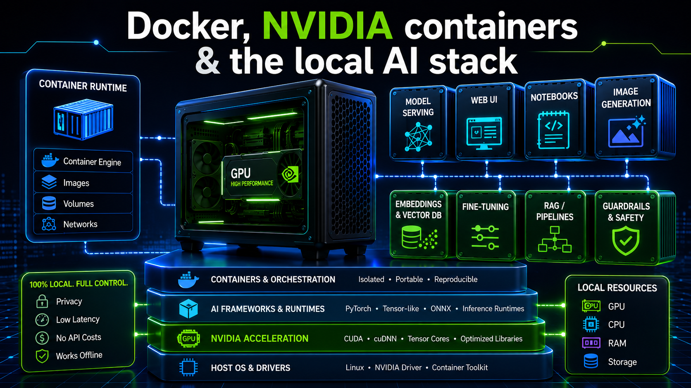
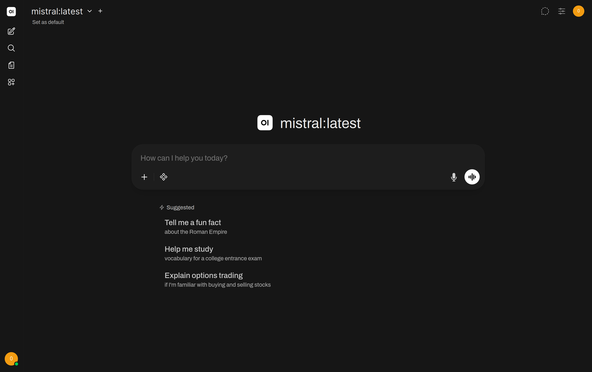
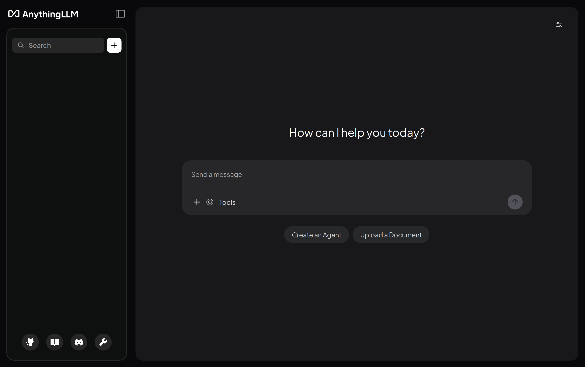
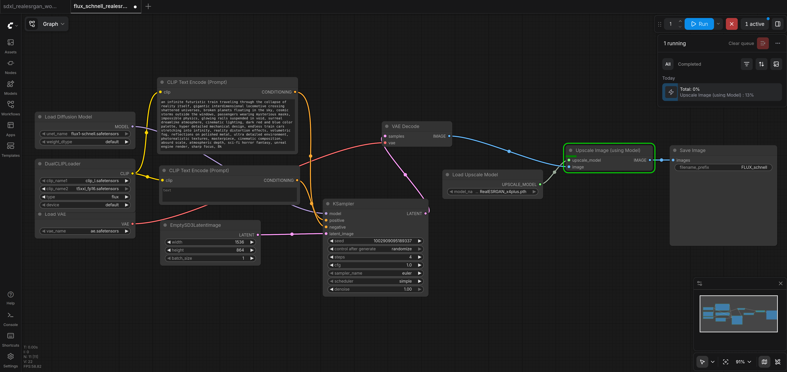

Project overview
This is a hands-on, seven-day AI training course for the Lenovo ThinkStation PGX with the NVIDIA GB10 Blackwell GPU running DGX OS 7. Over the seven days you build a complete local AI stack with Docker — model inference, a chat UI, retrieval-augmented generation, an OpenAI-compatible API, image generation, and audio — roughly one capability per day.
filesProject files & where they live
Every file below is shown in full, in the day where it is used. Locations assume the project root ~/llm-stack/ on the DGX OS 7 host.
| File | Location in llm-stack | Used in |
|---|---|---|
docker-compose.yml | ~/llm-stack/docker-compose.yml | Day 2 (full), referenced everywhere |
Dockerfile (ComfyUI) | ~/llm-stack/comfyui-docker/Dockerfile | Day 6 |
Dockerfile_audiocraft-docker | ~/llm-stack/audiocraft-docker/Dockerfile | Day 7 |
upload-kb.py | ~/llm-stack/upload-kb.py | Day 4 |
generate.py | ~/llm-stack/audiocraft/scripts/generate.py | Day 7 |
audiogen.py | ~/llm-stack/audiocraft/scripts/audiogen.py | Day 7 |
melody_conditioning.py | ~/llm-stack/audiocraft/scripts/melody_conditioning.py | Day 7 |
ui.py | ~/llm-stack/audiocraft/scripts/ui.py | Day 7 |
flux_schnell_realesrgan_workflow.json | ~/llm-stack/comfyui/workflows/ | Day 6 |
sdxl_realesrgan_workflow.json | ~/llm-stack/comfyui/workflows/ | Day 6 |
.env.example / .dockerignore | ~/llm-stack/ | Day 6 (reference) |
archGlobal stack architecture
The whole course builds a single multi-service stack. Some services run permanently (ollama, open-webui, anythingllm); the heavy ones (vllm, comfyui, audiocraft) use restart: no and are started on demand so they do not all fight over GPU memory at once.
The directory layout you build over the seven days:
~/llm-stack/
├── docker-compose.yml # defines the whole stack
├── .env.example .dockerignore
├── upload-kb.py # Day 4 — batch RAG ingestion
├── hf-cache/ # shared Hugging Face cache (vllm, audiocraft)
├── vllm-models/ # Day 5 — local vLLM model store
├── comfyui-docker/Dockerfile # Day 6 — ComfyUI image
├── comfyui-src/ # Day 6 — cloned ComfyUI source (bind-mounted to /comfyui)
├── comfyui/
│ ├── models/{checkpoints,vae,unet,clip,loras,controlnet,upscale_models}/
│ ├── output/ custom_nodes/ user/ workflows/
├── audiocraft-docker/Dockerfile # Day 7 — AudioCraft image
└── audiocraft/
├── scripts/{generate.py,audiogen.py,melody_conditioning.py,ui.py}
├── output/ # generated .wav files
└── dataset/{audio/,metadata.jsonl}
howtoHow to use this course
Each day is self-contained and progressive. Inside a day you will see colour-coded boxes:
- Concept — the idea explained before you touch the keyboard.
- Hands-on / Command — exactly what to type, with an explanation of why.
- Expected output — a realistic example of what you should see.
- Checkpoint — a checklist that confirms the day worked.
- Common issue / Troubleshooting — real errors and their fixes.
- Deep dive and Full file — extra depth and the verbatim source files.
- Exercise — practice to make it stick.
Almost everything runs inside containers. On DGX OS 7 you never pip install or apt install AI software on the host — the host stays clean and is managed by NVIDIA. Host commands are shown with a $ prompt; commands that run inside a container are reached with docker exec or docker compose run.
Unless stated otherwise, run host commands from the project root: cd ~/llm-stack.
Foundations & environment discovery
Before deploying anything, you map the terrain: what DGX OS 7 gives you, how to read the GPU, and how to confirm that the Docker → NVIDIA runtime → GB10 chain works end to end.
1Overview & objectives
- Explain what DGX OS 7 provides and why all AI work on it is container-based.
- Read every line of
nvidia-smiand know your total VRAM. - Confirm Docker and the NVIDIA Container Toolkit are active.
- Run the single test that proves a container can reach the GB10 GPU.
- Log in to the NGC catalog and understand the GB10 / sm_121 hardware reality.
Physical access to the Lenovo ThinkStation PGX (Type 30KL) with DGX OS 7 installed, a terminal, and network access. No prior AI experience is assumed.
None yet — Day 1 is pure exploration of the pre-installed environment.
2What DGX OS 7 actually is
DGX OS 7 is NVIDIA's tuned Linux for DGX/Spark-class machines. It ships everything you need so you never assemble a GPU stack by hand:
| Component | What it gives you |
|---|---|
| Ubuntu 24.04 LTS base | A standard Linux you already know — all the usual tools are present. |
| CUDA pre-installed | NVIDIA's GPU toolkit, so code can run on the card. On this machine CUDA 13.0 is the system level. |
| Recent NVIDIA drivers | The layer between the OS and the GB10 Blackwell GPU — already tuned and current. |
| Docker + NVIDIA Container Toolkit | Lets containers reach the GPU. This is the key to the whole ecosystem. |
The golden rule. On DGX/PGX you do not install AI software directly on the host — no pip install or apt install of frameworks. Everything runs in Docker containers, so the host stays clean and NVIDIA-managed.
# See the OS version
$ cat /etc/os-release
# Confirm the ARM64 architecture — decides which Docker images you can use
$ uname -maarch64uname -m returns aarch64 (ARM64), not x86_64. Remember this: many third-party container images are x86-only and will fail with exec format error on this machine. You will prefer official NVIDIA NGC images and ARM-aware community images throughout.
3Reading nvidia-smi — your GPU dashboard
# Instant overview
$ nvidia-smi+-------------------------------------------------------------------------+
| NVIDIA-SMI 570.xx Driver: 570.xx CUDA Version: 13.0 |
+------------------+-----------------------+------------------------------+
| GPU Name | Bus-Id Disp.A | Volatile Uncorr. ECC |
| 0 GB10 Blackwl| 00000000:01:00.0 Off | 0 |
+------------------+-----------------------+------------------------------+
| Fan Temp Perf | Pwr:Usage/Cap | Memory-Usage |
| N/A 42C P0 | 38W / 300W | 1024MiB / 98304MiB |
+------------------+-----------------------+------------------------------+| Field | What it tells you |
|---|---|
| Driver / CUDA Version | The driver and CUDA level. You pick NGC containers to match these. |
| GB10 Blackwell | The GPU name — confirms the driver recognises the card. |
| Temp (42C) | Idle temperature. Normal idle 40–60°C; up to ~85°C under load is fine. |
| Pwr 38W / 300W | Power draw / cap. Idle ~40W; ~150–250W during inference. |
| 1024MiB / 98304MiB | VRAM used / total. The total is what decides which models you can load. |
On the GB10 the GPU and CPU share one large pool of unified memory. PyTorch reports about 130.6 GB of GPU-visible memory on this system. That is why you can load very large models that would never fit on a consumer card — there is no separate small VRAM bank. Keep an eye on the total figure; it is your real budget across every service you run.
# Live monitoring — keep this open in a second terminal all day
$ watch -n 2 nvidia-smi
# Just memory, machine-readable
$ nvidia-smi --query-gpu=name,memory.total,memory.free --format=csv,noheader
# Continuous per-column monitor (memory + utilisation)
$ nvidia-smi dmon -s mu4Docker & the NVIDIA Container Toolkit
Docker is pre-installed on DGX OS 7. You only verify it is active and that the NVIDIA runtime is registered.
$ docker --version
$ docker compose version
$ systemctl status docker● docker.service - Docker Application Container Engine
Loaded: loaded (/lib/systemd/system/docker.service)
Active: active (running) since ...# If it is inactive, start and enable it
$ sudo systemctl start docker && sudo systemctl enable docker# Is the NVIDIA runtime registered with Docker?
$ docker info | grep -i runtimeRuntimes: io.containerd.runc.v2 nvidia runc
^^^^^^ "nvidia" must be present# If "nvidia" is missing (rare on DGX OS), reconfigure it
$ sudo nvidia-ctk runtime configure --runtime=docker
$ sudo systemctl restart dockerThe NVIDIA Container Toolkit is the bridge that lets a container see the GPU. Without the nvidia runtime registered, the --gpus all flag (and the Compose deploy block you meet on Day 2) does nothing.
5The fundamental test: GPU inside a container
This is the test that validates the whole chain. Success means exactly one thing: the nvidia-smi table prints from inside a container.
# Run nvidia-smi from INSIDE a fresh container
$ docker run --rm --gpus all \
nvcr.io/nvidia/cuda:13.0.1-base-ubuntu24.04 \
nvidia-smi+-------------------------------------------------------------------------+
| NVIDIA-SMI 570.xx <- this table printing from the container = success |
+-------------------------------------------------------------------------+
| 0 GB10 Blackwell ... |
+-------------------------------------------------------------------------+If you see that table, the full chain works: Docker → NVIDIA Container Toolkit → GB10. The options mean:
--rm— delete the container automatically when it exits (no zombie containers).--gpus all— expose every GPU to the container; without it the container cannot see the GB10.nvcr.io/nvidia/cuda:13.0.1-base-ubuntu24.04— NVIDIA's minimal CUDA base image. NGC publishes CUDA 13 ARM64 images; Docker Hub does not (it only has x86 for CUDA 13).
# Variant: drop into an interactive shell inside a CUDA container
$ docker run --rm -it --gpus all \
nvcr.io/nvidia/cuda:13.0.1-base-ubuntu24.04 bash
root@container:/# nvidia-smi
root@container:/# exit6The NGC catalog — official NVIDIA containers
NGC (NVIDIA GPU Cloud, catalog.ngc.nvidia.com) is the hub of containers tuned for your hardware. It is free with an account, and NGC images are the ones with proper GB10 / ARM64 support.
# 1. Create a free account at catalog.ngc.nvidia.com
# 2. Settings -> API Keys -> Generate Personal Key
# 3. Log in from the terminal:
$ docker login nvcr.io
Username: $oauthtoken <- literally this text, including the $
Password: <your-NGC-API-key> <- pasted from the NGC web UIThe username is always the literal string $oauthtoken (dollar sign included). It is an NGC quirk, not a shell variable — do not substitute anything for it.
# Pull the reference PyTorch container (Blackwell + ARM64)
$ docker pull nvcr.io/nvidia/pytorch:25.10-py3
# Confirm PyTorch sees the GB10
$ docker run --rm --gpus all \
nvcr.io/nvidia/pytorch:25.10-py3 \
python3 -c "
import torch
print('CUDA available:', torch.cuda.is_available())
print('GPU:', torch.cuda.get_device_name(0))
print('VRAM:', round(torch.cuda.get_device_properties(0).total_memory/1e9,1), 'GB')"=============
== PyTorch ==
=============
NVIDIA Release 25.10
PyTorch Version 2.9.0a0+145a3a7
...
NOTE: The SHMEM allocation limit is set to the default of 64MB. This may be
insufficient for PyTorch. NVIDIA recommends the use of the following flags:
docker run --gpus all --ipc=host --ulimit memlock=-1 --ulimit stack=67108864 ...
CUDA available: True
GPU: NVIDIA GB10
VRAM: 130.6 GBThe NVIDIA banner and SHMEM note are normal for this quick container test; the important lines are CUDA available, GPU name, and VRAM.
Seeing True and the GB10 name from a PyTorch NGC container is the final confirmation that everything is wired correctly. nvcr.io/nvidia/pytorch:25.10-py3 is the container you reuse to build ComfyUI (Day 6) and AudioCraft (Day 7).
7Deep dive — the GB10 / sm_121 reality
The GB10 is very recent hardware and that has practical consequences you must understand before choosing any container:
- The GB10 uses the Blackwell architecture with compute capability sm_121 — a value unique to the GB10 (desktop RTX 50-series are sm_100/sm_120).
- Full sm_121 support in NGC containers only lands from NGC 25.10+ (October 2025). Earlier containers may start but JIT kernels for sm_121 fail or fall back to CPU.
- From NGC 25.10,
sm_120 PTXis bundled and JIT-compiles to sm_121 on first launch — so PyTorch runs natively on the GB10 with no manual work.
| Container | Status on GB10 | Notes |
|---|---|---|
nvcr.io/nvidia/pytorch:25.10-py3 | ✅ confirmed | Reference image. PyTorch 2.9.0a0, CUDA 13.0, sm_120+PTX. |
nvcr.io/nvidia/pytorch:25.12-py3 | ✅ confirmed | PyTorch 2.10.0a0. Note: torchaudio is missing. |
nvcr.io/nvidia/cuda:13.0.1-*-ubuntu24.04 | ✅ confirmed | Only NGC ships CUDA 13 ARM64; Docker Hub is x86-only. |
nvcr.io/nvidia/vllm:25.10-py3 | ✅ confirmed | Official vLLM for DGX Spark / GB10 (Day 5). |
ollama/ollama:latest | ✅ confirmed | Native ARM64; the engine you start on Day 3. |
nvcr.io/nvidia/pytorch:≤24.10-py3 | ⚠ partial | No sm_121; set TORCH_CUDA_ARCH_LIST="12.0+PTX" as a workaround. |
| Third-party ComfyUI images (yanwk, ai-dock) | ❌ x86 only | Build your own from NGC (Day 6). |
Two known gaps you will meet later — both have clean workarounds in this course:
torchaudiois absent from NGC 25.10 on aarch64. Harmless for image generation (a one-line stub), and for audio it is replaced by a full on-disk stub built in the AudioCraft Dockerfile (Day 7).- Flash Attention 3 supports sm_90–sm_110 only; on GB10 use Flash Attention 2 (binary-compatible via sm_120) or PyTorch's native
scaled_dot_product_attention.
Optional — the NGC CLI lets you search and pull from the terminal (download the ARM64 Linux build):
# Configure once with your NGC API key
$ ngc config set
# Browse what is available
$ ngc registry image list 'nvidia/*'
$ ngc registry image info nvidia/pytorch
$ ngc registry image list --query "llm"8Checkpoint & exercises
nvidia-smiruns without errornvidia-smi- I noted my total VRAM in MiBnvidia-smi --query-gpu=memory.total --format=csv,noheader
- Architecture is aarch64uname -m → aarch64
- Docker is active (running)systemctl status docker
- "nvidia" appears in the Docker runtimesdocker info | grep -i runtime
- nvidia-smi works from INSIDE a containerdocker run --rm --gpus all nvcr.io/nvidia/cuda:13.0.1-base-ubuntu24.04 nvidia-smi
- docker compose version printsdocker compose version
- NGC account created and docker login nvcr.io succeededdocker login nvcr.io
- PyTorch NGC recognises the GB10 (True)torch.cuda.is_available() → True
- Open
watch -n 2 nvidia-smiin a second terminal, then in the first run the PyTorch container test. Watch VRAM rise and fall. - Run
docker run --rm -it --gpus all nvcr.io/nvidia/pytorch:25.10-py3 bashand, inside, printtorch.version.cudaandtorch.__version__. - Write down which two known GB10 gaps exist and which day each one is solved in.
You have a healthy environment, you can read nvidia-smi, Docker reaches the GB10, and you understand why NGC 25.10+ matters for sm_121. Day 2 turns this into a real stack: the complete docker-compose.yml and how containers get the GPU through Compose.
Docker, NVIDIA containers & the local AI stack
You now learn the vocabulary of containers and meet the blueprint of the whole course: the complete docker-compose.yml. Every later day adds or starts one of its services.

1Overview & objectives
- Define image, container, volume, bind mount, port mapping and container network.
- Understand the
~/llm-stackproject layout and why it is organised this way. - Read the complete
docker-compose.ymland know the role of every service. - Understand exactly how a Compose service is granted GPU access.
- Master the daily Compose commands for starting, stopping, watching and debugging.
Day 1 complete: Docker active, NVIDIA runtime registered, NGC login working.
Introduced here: ~/llm-stack/docker-compose.yml (shown in full).
2Docker concepts you must own
| Term | Meaning |
|---|---|
| Image | A read-only template: an OS plus software, frozen at a point in time. Example: ollama/ollama:latest. |
| Container | A running instance of an image — an isolated process with its own filesystem view. You can have many from one image. |
| Volume (named) | Docker-managed persistent storage living under /var/lib/docker/volumes/. Survives docker compose down. |
| Bind mount | A host directory mapped into a container, e.g. ~/llm-stack/comfyui/output:/comfyui/output. You edit files on the host and the container sees them instantly. |
| Port mapping | "3000:8080" maps host port 3000 to container port 8080. Format is always HOST:CONTAINER. |
| Container network | Compose puts services on one private network where each service is reachable by its service name as hostname (e.g. http://ollama:11434). |
| Docker Compose | A tool that runs a multi-service stack from one declarative YAML file instead of many docker run commands. |
Why containers on DGX? They keep the NVIDIA-tuned host pristine, make every component reproducible, and let incompatible Python/CUDA stacks coexist (Ollama, vLLM, ComfyUI and AudioCraft all want different versions). NGC images add GB10-correct CUDA and drivers so you never fight compatibility on the host.
How a container reaches the GPU. A normal container cannot see the GPU. Two equivalent mechanisms grant access:
- In
docker run: the flag--gpus all(used on Day 1). - In Compose: a
deploy.resources.reservations.devicesblock requesting thenvidiadriver. This is the modern method and the one used throughoutdocker-compose.yml.
Both ask the NVIDIA Container Toolkit to inject the driver and devices into the container.
3The llm-stack project
Create the project root. Everything in the course lives here; the final compose file mounts ~/llm-stack/... paths.
$ mkdir -p ~/llm-stack && cd ~/llm-stackKeeping one project directory means one docker compose context, one private network, and host-visible folders for models and outputs. You will create the per-service subfolders (comfyui/, audiocraft/, hf-cache/, …) on the day you first need them; the global tree is shown in the overview at the top of this course.
4The complete docker-compose.yml
This is the heart of the stack. Read it once now for shape; each service is dissected on its own day. Services with restart: no are started on demand to share the GPU; the always-on trio is ollama, open-webui, anythingllm.
The single declarative definition of every service, volume, port, environment variable and GPU reservation.
services:
ollama:
image: ollama/ollama:latest
container_name: ollama
restart: unless-stopped
ports:
- "11434:11434"
volumes:
- ollama:/root/.ollama
deploy:
resources:
reservations:
devices:
- driver: nvidia
count: all
capabilities: [gpu]
open-webui:
image: ghcr.io/open-webui/open-webui:main
container_name: open-webui
restart: unless-stopped
depends_on:
- ollama
ports:
- "3000:8080"
volumes:
- open-webui:/app/backend/data
ulimits:
nofile:
soft: 65536
hard: 65536
environment:
- OLLAMA_BASE_URL=http://ollama:11434
- RAG_EMBEDDING_MODEL=nomic-embed-text
- RAG_EMBEDDING_ENGINE=ollama
- CHUNK_SIZE=2000
- CHUNK_OVERLAP=200
anythingllm:
image: mintplexlabs/anythingllm:latest
container_name: anythingllm
restart: unless-stopped
ports:
- "3001:3001"
volumes:
- anythingllm:/app/server/storage
environment:
- STORAGE_DIR=/app/server/storage
- LLM_PROVIDER=ollama
- OLLAMA_BASE_PATH=http://ollama:11434
- EMBEDDING_ENGINE=ollama
- EMBEDDING_BASE_PATH=http://ollama:11434
- EMBEDDING_MODEL_PREF=nomic-embed-text:latest
- VECTOR_DB=lancedb
depends_on:
- ollama
comfyui:
build:
context: ./comfyui-docker
dockerfile: Dockerfile
container_name: comfyui
restart: no
platform: linux/arm64
ports:
- "8188:8188"
ipc: host
shm_size: 16gb
environment:
- NVIDIA_VISIBLE_DEVICES=all
- NVIDIA_DRIVER_CAPABILITIES=compute,utility
volumes:
- ~/llm-stack/comfyui-src:/comfyui
- ~/llm-stack/comfyui/models:/comfyui/models
- ~/llm-stack/comfyui/output:/comfyui/output
- ~/llm-stack/comfyui/custom_nodes:/comfyui/custom_nodes
- ~/llm-stack/comfyui/user:/comfyui/user
deploy:
resources:
reservations:
devices:
- driver: nvidia
count: all
capabilities: [gpu]
command: >
/bin/bash -c "
cd /comfyui;
python3 main.py --listen 0.0.0.0 --port 8188
--highvram --use-flash-attention"
vllm:
image: nvcr.io/nvidia/vllm:25.10-py3
container_name: vllm
restart: no # à la demande
ports:
- "8000:8000"
volumes:
- ~/llm-stack/vllm-models:/models
- ~/llm-stack/hf-cache:/root/.cache/huggingface
ipc: host
shm_size: 16gb
environment:
- NVIDIA_VISIBLE_DEVICES=all
- HF_TOKEN=<REDACTED_HF_TOKEN>
- HUGGING_FACE_HUB_TOKEN=<REDACTED_HF_TOKEN>
- HF_HUB_DISABLE_XET=1
- HF_HUB_ENABLE_HF_TRANSFER=0
deploy:
resources:
reservations:
devices:
- driver: nvidia
count: all
capabilities: [gpu]
command: >
python3 -m vllm.entrypoints.openai.api_server
--model Qwen/Qwen2.5-7B-Instruct
--host 0.0.0.0
--port 8000
--max-model-len 32768
--gpu-memory-utilization 0.8
audiocraft:
build:
context: ./audiocraft-docker
dockerfile: Dockerfile
container_name: audiocraft
platform: linux/arm64
ports:
- "7860:7860"
volumes:
- ~/llm-stack/audiocraft/scripts:/workspace/scripts
- ~/llm-stack/audiocraft/output:/workspace/output
- ~/llm-stack/audiocraft/dataset:/workspace/dataset
- ~/llm-stack/hf-cache:/root/.cache/huggingface
ipc: host
shm_size: 8gb
environment:
- NVIDIA_VISIBLE_DEVICES=all
- HF_TOKEN=<REDACTED_HF_TOKEN>
deploy:
resources:
reservations:
devices:
- driver: nvidia
count: all
capabilities: [gpu]
restart: no # started on demand like vLLM
volumes:
ollama:
open-webui:
anythingllm:
Set the two Hugging Face tokens shown as <REDACTED_HF_TOKEN> to your own token (or move it to a .env file and never commit it). The comfyui and audiocraft services build: from local Dockerfiles you create on Days 6 and 7 respectively.
| Service | Image | Port | Day | GPU |
|---|---|---|---|---|
ollama | ollama/ollama:latest | 11434 | 3 | always-on |
open-webui | ghcr.io/open-webui/open-webui:main | 3000→8080 | 3–4 | via Ollama |
anythingllm | mintplexlabs/anythingllm:latest | 3001 | 4 | via Ollama |
vllm | nvcr.io/nvidia/vllm:25.10-py3 | 8000 | 5 | on demand |
comfyui (build) | nvcr.io/nvidia/pytorch:25.10-py3 | 8188 | 6 | on demand |
audiocraft (build) | nvcr.io/nvidia/pytorch:25.10-py3 | 7860 | 7 | on demand |
Three patterns repeat across the file — learn them once:
- Named volumes (
ollama:,open-webui:,anythingllm:at the bottom) persist downloaded models and app data across restarts. - The shared
hf-cachebind mount (~/llm-stack/hf-cache:/root/.cache/huggingface) is mounted intovllmandaudiocraftso a Hugging Face model is downloaded once and reused everywhere. - The GPU reservation block appears in every GPU service — see the next section.
The compose comfyui service mounts ~/llm-stack/comfyui-src:/comfyui and simply runs main.py. That means you clone the ComfyUI source into comfyui-src once on the host (Day 6) rather than cloning at container start. The compose file uses a pre-cloned bind mount rather than cloning inside the container's command.
5GPU access in Compose, line by line
deploy:
resources:
reservations:
devices:
- driver: nvidia # use the NVIDIA Container Toolkit
count: all # expose every GPU (here: the single GB10)
capabilities: [gpu] # request GPU capabilityThis block is the Compose equivalent of --gpus all. It is mandatory for any service that must run on the GB10. Some services additionally set environment variables:
NVIDIA_VISIBLE_DEVICES=all— which GPUs the container may see.NVIDIA_DRIVER_CAPABILITIES=compute,utility— which driver features are exposed (used by ComfyUI).ipc: hostandshm_size— give the container enough shared memory; on a 128 GB unified machine this avoids “bus error” crashes during heavy model loads.
Never combine the legacy runtime: nvidia with a deploy block in the same service — it produces unknown or invalid runtime name: nvidia. Use only the deploy block.
Quick GPU-images recap from Day 1 that you will reuse here:
# NGC PyTorch is the base for the two custom builds
$ docker pull nvcr.io/nvidia/pytorch:25.10-py3
# vLLM official image
$ docker pull nvcr.io/nvidia/vllm:25.10-py3
# Community ARM64 images already used in compose
$ docker pull ollama/ollama:latest
$ docker pull ghcr.io/open-webui/open-webui:main
$ docker pull mintplexlabs/anythingllm:latest6Daily Compose commands
# --- lifecycle (run from ~/llm-stack) ---
$ docker compose up -d # start everything in the background
$ docker compose up -d ollama open-webui # start only specific services
$ docker compose down # stop all (data in volumes is kept)
$ docker compose down -v # stop AND delete volumes (erases models/data!)
$ docker compose restart ollama # restart one service
$ docker compose pull && docker compose up -d # update images# --- watch ---
$ docker compose ps # which services are up and their status
$ docker compose logs -f # follow logs of all services (Ctrl+C to stop)
$ docker compose logs -f ollama # follow one service
$ docker stats # live CPU / RAM / network per container
$ docker system df -v # disk used by images and volumes# --- interact with a running service ---
$ docker exec -it ollama ollama list # run a command inside a container
$ docker exec -it ollama bash # open a shell inside a container
$ docker volume ls # list named volumesMemorise docker exec -it <container> <command> — it is how you talk to Ollama, ComfyUI and the rest without ever installing anything on the host. docker compose run --rm <service> <command> is its on-demand cousin for the restart: no services (it starts a one-off container and removes it after).
Never run docker system prune -a --volumes — it deletes everything, including downloaded models and your chats. Target what you want instead: docker image prune -f for dangling images, or docker exec ollama ollama rm <model> for a single model.
7Troubleshooting
| Symptom | Likely cause | Fix |
|---|---|---|
exec format error | x86 image on ARM64 | Use an ARM64 / NGC image; for builds, base on nvcr.io/nvidia/pytorch:25.10-py3. |
unknown or invalid runtime name: nvidia | runtime: nvidia + deploy together | Remove runtime: nvidia, keep only the deploy block. |
| Container has no GPU | Missing deploy reservation | Add the GPU reservation block; verify with docker exec <svc> nvidia-smi. |
| port already in use | Another process holds the host port | Find it with sudo lsof -i :3000 or change the host side of the mapping. |
permission denied on Docker | User not in the docker group | sudo usermod -aG docker $USER then log out / in. |
| Volume data “disappeared” | Ran down -v or a global prune | Re-pull models; in future avoid -v and global prunes. |
Generic diagnostic flow when a service misbehaves:
$ docker compose ps # is it Up?
$ docker compose logs --tail=50 <svc> # what did it say?
$ docker exec <svc> nvidia-smi # can it see the GPU?
$ docker compose config | grep -A6 <svc> # is the YAML what I think it is?8Checkpoint & exercises
- The project root ~/llm-stack existsls -d ~/llm-stack
- docker-compose.yml is saved therels ~/llm-stack/docker-compose.yml
- I can explain image vs container vs volume vs bind mount
- I know what the deploy reservation block does
- docker compose config validates the filedocker compose config | head
- I can list/start/stop/log services from memorydocker compose ps / up -d / down / logs -f
- Run
docker compose configand confirm the file parses; pipe it throughgrep -i imageto list every image. - Without scrolling up, name three services that are always-on and three that are on demand, and give the host port of each.
- Explain in one sentence why the
hf-cachebind mount appears in four different services.
You can read the stack blueprint and you know how a service gets the GPU. Day 3 starts the first always-on services — ollama and open-webui — and you talk to your first local LLM.
Ollama, local LLM inference & Open WebUI
Time to talk to a model. You start the two always-on services of the stack — ollama (the inference engine) and open-webui (the chat UI) — pull your first local LLM, and drive it from the CLI, the REST API and the browser.

1Overview & objectives
- Explain what an LLM is and what local inference means.
- Distinguish a model, a runtime and a UI, and Ollama vs vLLM.
- Start the
ollamaandopen-webuiservices from the stack. - Pull, list, inspect and run models with
docker exec ollama ollama …. - Call the Ollama REST API and its OpenAI-compatible endpoint with
curl. - Create your Open WebUI account and confirm it sees Ollama.
Day 2 complete: you understand the compose file and the daily docker compose commands. The stack project lives in ~/llm-stack.
Services used today (defined in ~/llm-stack/docker-compose.yml): ollama and open-webui. No new files are written.
The request path you are about to build:
localhost:3000"] --> W["open-webui
container :8080"] W -->|"http://ollama:11434"| O["ollama
container :11434"] O --> G["GB10 GPU
models in VRAM"] C["curl / your code"] -->|"localhost:11434"| O
Two services, one private Docker network. The browser talks to Open WebUI; Open WebUI talks to Ollama by its service name (http://ollama:11434); Ollama loads models onto the GB10.
2LLM concepts you must own
| Term | Meaning |
|---|---|
| LLM | A Large Language Model: a neural network trained to predict the next token. It powers chat, summarisation, code, Q&A — all by repeatedly predicting what comes next. |
| Token | The unit a model reads and writes — roughly ¾ of a word in English. "unbelievable" may be 3 tokens. You pay compute and context budget per token. |
| Context length | The maximum number of tokens (prompt + reply) the model can attend to at once, e.g. 8k, 32k, 128k. Exceed it and the oldest tokens are dropped. |
| Inference | Running a trained model to get an answer (as opposed to training it). Local inference = doing this on your own GB10, with no data leaving the machine. |
| System vs user prompt | The system prompt sets persistent behaviour ("You are a terse expert…"); the user prompt is the actual question. The model sees both. |
Model vs runtime vs UI — three layers people constantly confuse:
- Model: the weights, e.g.
llama3.2. Just data on disk. - Runtime / engine: the program that loads the weights into VRAM and computes answers — here
ollama(and latervllm). - UI: the human front-end — here
open-webui. It has no model of its own; it sends your text to the runtime over an API.
Ollama vs vLLM — both are inference runtimes, with different sweet spots:
| Ollama (Day 3) | vLLM (Day 5) | |
|---|---|---|
| Best for | Easy local chat, many models, quick swaps | High-throughput serving of one model |
| Model format | GGUF (quantised, small) | Hugging Face safetensors (usually full precision) |
| Loading | On demand, unloads when idle | Loads once at startup, stays resident |
| API | /api/generate + OpenAI-compatible /v1 | OpenAI-compatible /v1 |
| Concurrency | Modest | Excellent (continuous batching) |
Rule of thumb: Ollama to explore, vLLM to serve. You will run both on the same GB10.
3Start Ollama & pull your first model
From the project root, bring up the two always-on services. ollama has restart: unless-stopped, so it also returns after a reboot.
$ cd ~/llm-stack
$ docker compose up -d ollama open-webuiConfirm both are Up and that Ollama actually sees the GPU:
$ docker compose ps
$ docker exec ollama nvidia-smiNAME IMAGE STATUS
ollama ollama/ollama:latest Up 12 seconds
open-webui ghcr.io/open-webui/open-webui:main Up 10 seconds
+-----------------------------------------------------------------+
| GPU Name Memory-Usage |
| 0 GB10 512MiB / 98304MiB <- ollama can reach the GPU |
+-----------------------------------------------------------------+All Ollama interaction goes through the container with docker exec ollama ollama …. You never install Ollama on the host. Models land in the named volume ollama at /root/.ollama inside the container, so they survive docker compose down.
Pick a model that fits comfortably in the ~130 GB of GPU-visible unified memory, then pull it:
$ docker exec -it ollama ollama pull llama3.2Watch the GPU fill while it loads (in a second terminal):
$ watch -n 2 nvidia-smi| Model | Params · approx VRAM | Use it for |
|---|---|---|
llama3.2 | 3B · ~2 GB | First steps, fast replies, the default of this course |
mistral | 7B · ~4 GB | Strong all-rounder, great quality/size ratio |
llama3.3:70b | 70B · ~42 GB | High-end reasoning; the GB10 has the memory for it |
qwen2.5:72b | 72B · ~45 GB | Top-tier open model, multilingual |
On the GB10 the GPU shares the machine's unified memory, so a 70B model is genuinely usable — something a 24 GB desktop card cannot do. Still leave headroom: if you plan to run vllm or comfyui at the same time, prefer the smaller models while learning.
4Drive the model: CLI & REST API
Manage models entirely through docker exec:
## List installed models
$ docker exec ollama ollama list
## Detailed info (context size, parameters, quantisation)
$ docker exec ollama ollama show llama3.2
## Which models are loaded in VRAM right now
$ docker exec ollama ollama ps
## Remove a model to free disk space
$ docker exec ollama ollama rm llama3.2Chat interactively from the terminal — the fastest way to confirm a model answers:
$ docker exec -it ollama ollama run llama3.2
>>> Hello! In one sentence, what are you?
>>> /byeThe first reply takes a few seconds while the weights load into VRAM; later replies are near-instant as long as the model stays resident. /bye exits the chat.
Now hit the REST API from the host. Ollama publishes it on localhost:11434:
$ curl http://localhost:11434/api/generate -d '{
"model": "llama3.2",
"prompt": "Say hello in 10 words or fewer.",
"stream": false
}'{"model":"llama3.2","response":"Hello there! How can I help you today?","done":true,...}Ollama also exposes an OpenAI-compatible API at http://localhost:11434/v1. Any tool or SDK that speaks OpenAI can point there and use your local models — no code changes beyond the base URL. This is exactly how later days wire Open WebUI, AnythingLLM and your own scripts in.
## List models the way integrations expect
$ curl http://localhost:11434/api/tags | python3 -m json.tool
## OpenAI-style chat completion
$ curl http://localhost:11434/v1/chat/completions -d '{
"model": "llama3.2",
"messages": [{"role":"user","content":"Hi"}]
}'5Open WebUI — the browser front-end
Open the UI. On the machine itself:
http://localhost:3000From another machine on the LAN, find the ThinkStation's IP and use it:
$ ip addr show | grep "inet " | grep -v 127.0.0.1
## then browse to http://<that-IP>:3000Recall the port mapping "3000:8080": the browser uses 3000 on the host, but inside the container Open WebUI listens on 8080. The first visit asks you to create a local administrator account — it stays on your machine, stored in the named volume open-webui at /app/backend/data.
Confirm Open WebUI can reach Ollama: Settings → Connections should list http://ollama:11434 with a green Connected status. Then pick llama3.2 from the model dropdown and send a message.
## If the connection is red, inspect the UI logs:
$ docker compose logs open-webui | tail -20Features you will lean on across the course:
- Multi-turn chat with history, regeneration and branching.
- Model switching — every model you
ollama pullappears automatically, no restart. - File upload — drop PDFs/images into a chat (the foundation for RAG on Day 4).
- System prompts — give a model a persistent role to specialise it.
Open WebUI auto-detects models from Ollama. After any docker exec ollama ollama pull <name> the model shows up in the dropdown within seconds — you do not restart Open WebUI.
6Daily management
## Start the two services (from ~/llm-stack)
$ docker compose up -d ollama open-webui
## Stop cleanly — data in the named volumes is kept
$ docker compose stop ollama open-webui
## Restart just one service
$ docker compose restart open-webui
## Update to newer images
$ docker compose pull ollama open-webui
$ docker compose up -d ollama open-webuiBecause both carry restart: unless-stopped, they come back on their own after a reboot — you do not relaunch them manually. Use docker compose stop (not down) when you only want to pause; down also removes the containers and network, though the named volumes — and therefore your models and chats — remain.
## Live status
$ docker compose ps
## Live CPU/RAM/network per container
$ docker stats
## GPU load while a model answers
$ watch -n 2 nvidia-smi7Troubleshooting
| Symptom | Likely cause | Fix |
|---|---|---|
| Open WebUI shows Connection refused right after start | Ollama needs a few seconds to be ready | Wait 10–15 s and reload. Confirm with docker compose logs -f ollama. |
| UI cannot reach Ollama (red in Settings → Connections) | Wrong base URL — using localhost instead of the service name | It must be http://ollama:11434. Inside Compose, localhost means the UI's own container, not Ollama. |
ollama runs but is very slow / CPU-only | The GPU reservation block is missing | Check docker exec ollama nvidia-smi works; ensure the deploy.resources.reservations block is present (Day 2). |
| Port 3000 or 11434 already in use | Another process holds the host port | Find it with sudo lsof -i :3000 and stop it, or remap the host side in the compose file. |
| A pull stalls at 0% | Network/registry hiccup | Re-run the same ollama pull — it resumes; check disk space with df -h. |
Order of diagnosis: is the container up (docker compose ps)? does the engine answer (curl localhost:11434/api/tags)? can the UI reach the engine (Settings → Connections)? Fix them in that order and most problems disappear.
8Checkpoint & exercises
- Both services report
Up.docker compose ps - Ollama can see the GB10.
docker exec ollama nvidia-smi - At least one model is installed.
docker exec ollama ollama list - The REST API answers on the host.
curl http://localhost:11434/api/tags - Open WebUI loads and is Connected to Ollama at
http://ollama:11434.
- Pull a second model (e.g.
mistral) and compare answer speed and quality withllama3.2on the same prompt in Open WebUI. - Use
ollama show llama3.2to read its context length, then explain in your own words what would happen to a 50-page prompt. - Write a one-line
curlcall to the OpenAI-compatible/v1/chat/completionsendpoint and confirm you get the same model to reply. - Give the model a system prompt in Open WebUI ("Answer only in bullet points") and verify the behaviour persists across turns.
You started the engine and the UI, pulled a local model, and drove it three ways — CLI, REST API and browser. You also met the OpenAI-compatible endpoint that the rest of the stack relies on. Next, Day 4 turns this chat into a system that can answer from your documents using embeddings and RAG.
Documents, embeddings, RAG & AnythingLLM
You make the model answer from your own documents. You learn what embeddings and RAG really are, configure Open WebUI's document pipeline correctly, batch-upload a library with a real script, diagnose the vector store, and meet the dedicated anythingllm service.

1Overview & objectives
- Explain embeddings, a vector database, and Retrieval-Augmented Generation (RAG).
- Say when to use RAG.
- Configure the embedding model and Documents settings in Open WebUI correctly.
- Create a Knowledge Base, get its API key, and upload files via the API.
- Understand why EPUB beats PDF here, and the empty-content / dimension bugs and their fixes.
- Run the
upload-kb.pybatch uploader and tune retrieval for good answers. - Start the alternative
anythingllmservice and know when to prefer it.
Day 3 complete: ollama and open-webui running, at least one chat model installed, and Open WebUI connected to Ollama.
Used today: the open-webui and anythingllm services from docker-compose.yml, plus the helper script ~/llm-stack/upload-kb.py (shown in full).
2RAG & embeddings — the concepts
| Term | Meaning |
|---|---|
| Embedding | A list of numbers (a vector) that captures the meaning of a chunk of text. Similar meanings sit close together in this space, regardless of exact words. |
| Embedding model | A small model that turns text into those vectors. Here nomic-embed-text (768 dimensions, 8192-token input). |
| Chunk | A document is split into pieces (e.g. ~2000 characters). Each chunk is embedded and stored separately so retrieval can pull just the relevant parts. |
| Vector database | Stores embeddings and finds the nearest vectors to a query. Open WebUI uses ChromaDB internally; AnythingLLM uses LanceDB. |
| RAG | Retrieval-Augmented Generation: embed the question, retrieve the closest chunks, paste them into the prompt as context, and let the LLM answer grounded in your text. |
The RAG pipeline you are about to build:
EPUB / PDF / TXT"] --> CH["Chunk
~2000 chars"] CH --> EM["Embed each chunk
nomic-embed-text"] EM --> VDB[("Vector DB
ChromaDB")] Q["User question"] --> QE["Embed question"] QE --> VDB VDB -->|"top-K nearest chunks"| CTX["Context"] CTX --> LLM["LLM via Ollama
answers grounded in context"] Q --> LLM
Limits of document Q&A: RAG can only answer from what was retrieved. Bad chunking, a weak embedding model, or too few retrieved chunks all cause "I don't know" or hallucinated answers — which is why the configuration below matters so much.
3Embedding model & Documents configuration
RAG needs an embedding model. Pull it into Ollama so Open WebUI can call it locally:
$ docker exec -it ollama ollama pull nomic-embed-textFor French or mixed-language libraries, bge-m3 (1024 dims) often retrieves better:
$ docker exec -it ollama ollama pull bge-m3The stack already points Open WebUI at the right defaults via environment variables in docker-compose.yml — RAG_EMBEDDING_MODEL=nomic-embed-text, CHUNK_SIZE=2000 and CHUNK_OVERLAP=200 — but you still set the engine in the UI so it uses Ollama rather than a bundled model.
In Open WebUI go to Settings → Documents and set:
| Setting | Value | Why |
|---|---|---|
| Embedding Engine | Ollama | Use your local GPU embedding model, not a bundled CPU one |
| Embedding Model | nomic-embed-text | 768-dim, 8192-token context, fast on GB10 |
| Chunk Size | 2000 | Larger chunks keep more context per retrieval |
| Chunk Overlap | 200 | Avoids cutting sentences/ideas across chunk borders |
| Hybrid Search | On | Combines vector similarity with keyword (BM25) matching |
| BM25 Weight | 0.5 | Equal blend of semantic and keyword relevance |
| Top K | 8 | How many chunks to retrieve per question |
| Top K Reranker | 3 | Keep the 3 best after reranking — fed to the LLM |
| Relevance Threshold | 0 (then 0.3) | Start at 0 to verify retrieval, raise to 0.3 to cut noise |
| PDF Extract Images | Off | Image extraction triggers numpy errors here — leave off |
Changing the embedding model later is not free: existing vectors were stored at the old dimension. You must reset and reindex (see d4-6). Decide on nomic-embed-text (or bge-m3) before uploading a large library.
4Knowledge Base & the API key
Create a container for your documents: Workspace → Knowledge → +, give it a name. Open it and read the UUID from the browser URL — that is the KB_ID the API needs:
http://localhost:3000/workspace/knowledge/<THIS-IS-THE-KB_ID>Get a personal API key under Settings → Account → API Keys. It looks like sk-… (Open WebUI) or a long JWT (AnythingLLM).
Treat the API key like a password. Never hard-code API keys, passwords, tokens, or other credentials directly in scripts — the key in upload-kb.py is shown here as <REDACTED_API_KEY>. Set your own via an environment variable or a local .env file excluded from Git, and never commit it.
With the KB_ID and an API key you can drive Open WebUI entirely over HTTP — upload files, process them, attach them to the Knowledge Base — which is exactly what the batch script automates.
5EPUB vs PDF & the batch uploader
For RAG, EPUB beats PDF. EPUB is structured text, so extraction is clean. PDFs are layout-first: columns, headers and scanned pages produce garbled or empty text. If you have a choice, convert to EPUB before uploading.
Uploading one file to a Knowledge Base is actually three API steps, and order matters:
- Upload the raw file →
POST /api/v1/files/→ returns afile_id. - Process it through retrieval (chunk + embed) →
POST /api/v1/retrieval/process/file. - Attach it to the KB →
POST /api/v1/knowledge/{KB_ID}/file/add.
Skipping step 2 (or not waiting for extraction to finish) is the classic cause of the EMPTY_CONTENT error, especially for EPUBs. The script below polls until content is ready, then runs all three steps with delays.
Batch-uploads every PDF/EPUB/TXT in a folder into an Open WebUI Knowledge Base, doing the upload → process → attach sequence with a content-ready poll and per-file status counters.
#!/usr/bin/env python3
import sys
import time
import requests
from pathlib import Path
# ─── Configuration ───────────────────────────────────────────
API_KEY = "<REDACTED_API_KEY>"
KB_ID = "87d5e5cb-efc5-43be-9cda-f5a582b565ae"
URL = "http://localhost:3000"
PDF_DIR = Path("/home/user/documents/epub")
EXTS = {".pdf", ".epub", ".txt"}
DELAY = 60 # seconds to wait after upload — increase if errors
# ─────────────────────────────────────────────────────────────
MIME_TYPES = {
".pdf": "application/pdf",
".epub": "application/epub+zip",
".txt": "text/plain",
}
headers_auth = {"Authorization": f"Bearer {API_KEY}"}
headers_json = {
"Authorization": f"Bearer {API_KEY}",
"Content-Type": "application/json",
}
files_list = sorted([f for f in PDF_DIR.iterdir() if f.suffix.lower() in EXTS])
if not files_list:
print(f"No files found in {PDF_DIR}")
sys.exit(1)
print(f"📚 {len(files_list)} file(s) found\n")
success, empty, failed = 0, 0, 0
for i, filepath in enumerate(files_list, 1):
ext = filepath.suffix.lower()
mime = MIME_TYPES.get(ext, "application/octet-stream")
print(f"[{i}/{len(files_list)}] {filepath.name}")
# ── Step 1: Upload ─────────────────────────────────────
try:
with open(filepath, "rb") as f:
r = requests.post(
f"{URL}/api/v1/files/",
headers=headers_auth,
files={"file": (filepath.name, f, mime)},
timeout=300,
)
r.raise_for_status()
file_id = r.json().get("id")
if not file_id:
raise ValueError("No file_id")
print(f" ↑ Uploaded ID: {file_id}")
except Exception as e:
print(f" ❌ Upload failed: {e}")
failed += 1
print()
continue
# ── Smart wait — check that the content is ready ──
print(f" ⏳ Waiting for extraction...", end="", flush=True)
wait_max = 60 # max seconds
wait_step = 2
waited = 0
content_ready = False
while waited < wait_max:
time.sleep(wait_step)
waited += wait_step
try:
r = requests.get(
f"{URL}/api/v1/files/{file_id}",
headers=headers_auth,
timeout=10,
)
content = r.json().get("data", {}).get("content", "")
if len(content.strip()) > 100:
content_ready = True
print(f" {waited}s ✓ ({len(content)} characters)")
break
else:
print(".", end="", flush=True)
except Exception:
print(".", end="", flush=True)
if not content_ready:
print(f" timeout {wait_max}s — content not available")
# ── Step 2: Process via retrieval ──────────────────────
try:
r = requests.post(
f"{URL}/api/v1/retrieval/process/file",
headers=headers_json,
json={
"file_id": file_id,
"collection_name": f"file-{file_id}",
},
timeout=600,
)
body = r.json()
if r.status_code == 200 and body.get("status"):
chars = len(body.get("content", ""))
print(f" ⚙️ Processed {chars} characters indexed")
elif "EMPTY" in str(body):
print(f" ⚠️ Empty content — file skipped")
empty += 1
print()
continue
else:
print(f" ⚠️ Process ({r.status_code}): {body}")
except Exception as e:
print(f" ⚠️ Process failed: {e}")
# ── Step 3: Add to the Knowledge Base ──────────────────
try:
r = requests.post(
f"{URL}/api/v1/knowledge/{KB_ID}/file/add",
headers=headers_json,
json={"file_id": file_id},
timeout=120,
)
body = r.json()
if "EMPTY_CONTENT" in str(body):
print(f" ⚠️ Empty content when adding to KB — skipped")
empty += 1
elif r.status_code == 200:
nb = len(body.get("files", []))
print(f" ✅ Indexed ({nb} file(s) in the KB)")
success += 1
else:
print(f" ❌ KB error ({r.status_code}): {body}")
failed += 1
except Exception as e:
print(f" ❌ KB error: {e}")
failed += 1
print()
print("━" * 40)
print(f"✅ Success : {success}")
print(f"⚠️ Empty : {empty} ← unreadable files")
print(f"❌ Failed : {failed}")
print(f"📚 Total : {len(files_list)}")Adapt the configuration block before running: set API_KEY to your own key (shown redacted), KB_ID to your Knowledge Base UUID, and PDF_DIR to your documents folder (for example /home/user/documents/epub). TODO: set your own PDF_DIR. Raise DELAY if you still hit empty-content errors.
Run it from the host (it talks to Open WebUI on localhost:3000); requests is the only dependency:
$ pip install --user requests
$ python3 ~/llm-stack/upload-kb.py📚 23 file(s) found
[1/23] book-one.epub
↑ Uploaded ID: 8b1c…
⏳ Waiting for extraction... 6s ✓ (148213 characters)
⚙️ Processed 148213 characters indexed
✅ Indexed (1 file(s) in the KB)
...
━━━━━━━━━━━━━━━━━━━━━━━━━━━━━━━━━━━━━━━━━━
✅ Success : 23
⚠️ Empty : 0
❌ Failed : 0
📚 Total : 236Diagnosing with ChromaDB
Open WebUI keeps its vectors in a ChromaDB store inside the container at /app/backend/data/vector_db. When retrieval misbehaves, look there before blaming the model.
Dimension mismatch. If you change the embedding model after indexing, you will see:
Expected embedding dimension 384, got 768Old vectors were stored at one size; the new model produces another. Fix it by resetting and reindexing:
- In Open WebUI: Settings → Documents → Reset Vector Storage, then re-upload / Reindex.
- Confirm the active model is the one you intend before re-uploading.
files: null. A GET /api/v1/knowledge/{KB_ID} can return files: null even when files are attached (an Open WebUI v0.9.2 quirk). Use the dedicated files endpoint instead:
$ curl -H "Authorization: Bearer <REDACTED_API_KEY>" \
http://localhost:3000/api/v1/knowledge/<KB_ID>/files | python3 -m json.tool## Peek inside the running container
$ docker exec -it open-webui ls -la /app/backend/data/vector_db
## Follow logs while uploading to catch extraction errors live
$ docker compose logs -f open-webui7Querying & tuning RAG
Attach the Knowledge Base to a chat: type # in the message box and pick your KB, or assign it to a model in Workspace. Then ask a question whose answer is in your documents.
Tuning levers, in the order to reach for them:
- Top K too low → missing context; raise toward 8–10.
- Relevance Threshold too high → good chunks filtered out; start at 0, then 0.3.
- Reranker Top K controls how many survive to the prompt (3 is a good default).
- Hybrid Search on with BM25 0.5 rescues exact-term questions vector search alone misses.
Model choice matters for RAG quality. llama3.2 and llama3.3:70b follow retrieved context well. Avoid qwen3 thinking mode for RAG — it tends to reason past the context; if you must use it, append /no_think to suppress the chain.
A good answer cites the chunk it used. If answers are vague, verify retrieval first (lower the threshold and check which chunks come back) before assuming the model is at fault — 9 times out of 10 the problem is retrieval, not generation.
8AnythingLLM — the dedicated alternative
Open WebUI bolts RAG onto a chat UI; AnythingLLM is built around documents and workspaces from the ground up. The stack ships it as a separate service so you can compare.
Start it and open the UI on its own port:
$ cd ~/llm-stack
$ docker compose up -d anythingllm
## then browse to http://localhost:3001| Compose setting | Value | Meaning |
|---|---|---|
| image | mintplexlabs/anythingllm:latest | Official AnythingLLM image |
| port | 3001:3001 | Separate from Open WebUI's 3000 |
LLM_PROVIDER | ollama | Reuses your local Ollama engine — no second model server |
VECTOR_DB | lancedb | Bundled embedded vector DB (no extra service) |
EMBEDDING_MODEL_PREF | nomic-embed-text | Same embedding model as Open WebUI, via Ollama |
Because it points at the same ollama service, AnythingLLM needs the Ollama base URL set to the service name (http://ollama:11434), exactly like Open WebUI. Create a workspace, drop documents in, and chat — vectors live in LanceDB inside the container's volume.
Which to use? Open WebUI if you want one tool for chat + light RAG + model management. AnythingLLM if documents are the main event: per-workspace isolation, document-centric UX, and easy switching of embedding/LLM providers. Both run side by side on the GB10.
9Troubleshooting & checkpoint
| Symptom | Likely cause | Fix |
|---|---|---|
EMPTY_CONTENT on EPUB upload | Attached to KB before extraction finished, or step 2 skipped | Use upload-kb.py's flow: upload → poll → process → add; raise DELAY. |
| "Expected embedding dimension 384, got 768" | Embedding model changed after indexing | Reset Vector Storage, confirm model, reindex (d4-6). |
| KB query returns nothing useful | Threshold too high or Top K too low | Set Relevance Threshold 0, Top K 8, Hybrid Search on; verify retrieved chunks. |
GET /knowledge/{id} shows files: null | Open WebUI v0.9.2 endpoint quirk | Query /knowledge/{id}/files instead. |
| PDF uploads index as empty | Scanned/columned PDF, or PDF image extraction on | Turn PDF Extract Images Off; convert to EPUB. |
| AnythingLLM can't reach the model | Ollama URL set to localhost | Use http://ollama:11434 (service name on the Compose network). |
nomic-embed-textis installed in Ollama.docker exec ollama ollama list- Documents settings use the Ollama engine with the values above.
- A Knowledge Base exists and you have its UUID + API key.
- Files are attached and visible via the files endpoint.
curl .../api/v1/knowledge/<KB_ID>/files - A question is answered from your documents in chat.
- Upload the same book as both PDF and EPUB into two KBs and compare answer quality on identical questions.
- Lower
Relevance Thresholdto 0 and then 0.3; observe how the retrieved chunks change. - Adapt
upload-kb.py'sPDF_DIRand key, then batch-upload a small folder and read the success/empty/failed summary. - Spin up
anythingllm, import one document, and write two sentences on which UI you prefer and why.
You turned a generic chatbot into a system that answers from your own library: embeddings + a vector DB + retrieval feeding the LLM. You configured the pipeline, automated uploads, fixed the empty-content and dimension traps, and compared Open WebUI with AnythingLLM. Day 5 moves to vllm for high-throughput model serving over a clean OpenAI-compatible API.
vLLM, Hugging Face models, APIs & advanced inference
You add a second, production-grade inference engine. vllm serves one Hugging Face model fast over an OpenAI-compatible API, pulling weights through a shared Hugging Face cache. You learn the GB10-specific settings that make it start cleanly.
1Overview & objectives
- Explain what vLLM is and when to choose it over Ollama.
- Understand the
vllmservice: image, ports, volumes, env and command. - Use a shared Hugging Face cache so models download once and are reused.
- Call the OpenAI-compatible API at
localhost:8000/v1fromcurland Python. - Reason about VRAM,
--gpu-memory-utilization,--max-model-lenand quantization. - Fix the common GB10 issues: Xet download 403s, memory conflicts, slow first start.
Days 1–3 complete. You are comfortable with docker compose, the GPU reservation block, and the idea of an OpenAI-compatible endpoint (met on Day 3).
Used today: the vllm service in ~/llm-stack/docker-compose.yml, and the shared cache directory ~/llm-stack/hf-cache.
2vLLM vs Ollama — why a second engine
Ollama is a friendly local runner: many models, on-demand loading, GGUF quantisation. vLLM is a serving engine built for throughput — it loads one model and keeps it hot, using continuous batching and PagedAttention to serve many concurrent requests efficiently.
| Ollama | vLLM | |
|---|---|---|
| Goal | Explore, swap models easily | Serve one model at scale |
| Weights | GGUF (quantised, small) | Hugging Face safetensors (full precision by default) |
| Loading | On demand; unloads when idle | Once at startup; stays resident |
| Concurrency | Modest | Excellent — many parallel requests |
| Memory | Small footprint | Pre-reserves a VRAM fraction up front |
| API | REST + OpenAI /v1 | OpenAI /v1 (drop-in) |
Both are OpenAI-compatible, so the same client code targets either by changing the base URL (:11434/v1 for Ollama, :8000/v1 for vLLM).
container :8000"] V --> HF[("hf-cache
shared weights")] V --> G["GB10 GPU
model resident in VRAM"]
3The vLLM service & the Hugging Face cache
This is the vllm block from docker-compose.yml (the HF token is redacted):
vllm:
image: nvcr.io/nvidia/vllm:25.10-py3
container_name: vllm
restart: no # on demand
ports:
- "8000:8000"
volumes:
- ~/llm-stack/vllm-models:/models
- ~/llm-stack/hf-cache:/root/.cache/huggingface # shared HF cache
ipc: host
shm_size: 16gb
environment:
- NVIDIA_VISIBLE_DEVICES=all
- HF_TOKEN=<REDACTED_HF_TOKEN>
- HUGGING_FACE_HUB_TOKEN=<REDACTED_HF_TOKEN>
- HF_HUB_DISABLE_XET=1
- HF_HUB_ENABLE_HF_TRANSFER=0
deploy:
resources:
reservations:
devices:
- driver: nvidia
count: all
capabilities: [gpu]
command: >
python3 -m vllm.entrypoints.openai.api_server
--model Qwen/Qwen2.5-7B-Instruct
--host 0.0.0.0
--port 8000
--max-model-len 32768
--gpu-memory-utilization 0.8Line by line, the parts that matter on the GB10:
image: nvcr.io/nvidia/vllm:25.10-py3— the NGC vLLM image. 25.10+ is required so the bundled CUDA understands the Blackwellsm_121architecture.restart: no— vLLM is heavy and started on demand, unlike the always-on Ollama.ipc: host+shm_size: 16gb— vLLM uses large shared-memory buffers; without this you get cryptic crashes.HF_TOKEN/HUGGING_FACE_HUB_TOKEN— both set (some code reads one, some the other) so gated/large models download.HF_HUB_DISABLE_XET=1+HF_HUB_ENABLE_HF_TRANSFER=0— disable the Xet CDN and the fast-transfer path, which return 403s from inside NGC containers on this setup.--model Qwen/Qwen2.5-7B-Instruct— a strong, public model (no gating, unlikemeta-llamawhich requires access approval).--max-model-len 32768— cap the context window; larger needs more VRAM for the KV cache.--gpu-memory-utilization 0.8— reserve 80% of GPU memory, leaving room for Ollama/ComfyUI.
Create the directories the service mounts, then start it:
$ mkdir -p ~/llm-stack/vllm-models ~/llm-stack/hf-cache
$ cd ~/llm-stack
$ docker compose up -d vllmWatch it download and load (first run is slow — see below):
$ docker compose logs -f vllmThe shared hf-cache is mounted by vllm and the audio service alike. Download a model once and every service reuses it from ~/llm-stack/hf-cache — saving tens of GB and long waits.
4The OpenAI-compatible API
Once the logs show the server is up, list the served model:
$ curl http://localhost:8000/v1/models | python3 -m json.toolThen run a chat completion — identical shape to OpenAI's API:
$ curl http://localhost:8000/v1/chat/completions -d '{
"model": "Qwen/Qwen2.5-7B-Instruct",
"messages": [{"role":"user","content":"Explain VRAM in one sentence."}]
}'INFO: Started server process
INFO: Uvicorn running on http://0.0.0.0:8000
INFO: Application startup complete.
...
{"id":"chatcmpl-…","model":"Qwen/Qwen2.5-7B-Instruct","choices":[{"message":{"role":"assistant","content":"VRAM is the GPU's dedicated memory …"}}]}Because it is OpenAI-compatible, the official openai Python client works unchanged — just point base_url at vLLM:
from openai import OpenAI
client = OpenAI(base_url="http://localhost:8000/v1", api_key="not-needed")
r = client.chat.completions.create(
model="Qwen/Qwen2.5-7B-Instruct",
messages=[{"role": "user", "content": "Hello"}],
)
print(r.choices[0].message.content)This is how you wire local inference into your own apps and scripts.
5VRAM, quantization & limits
| Lever | Effect |
|---|---|
--gpu-memory-utilization | Fraction of GPU memory vLLM grabs at startup. Higher = bigger KV cache / more concurrency, but less left for other services. |
--max-model-len | Maximum context tokens. Doubling it roughly doubles KV-cache VRAM. |
| Model size | 7B fits easily; 70B is feasible in the GB10's unified memory but leaves little headroom. |
| Quantization | Storing weights in fewer bits (e.g. AWQ/GPTQ) cuts VRAM and speeds load at a small quality cost — useful when running several engines at once. |
Why 0.8 and not the default 0.9? With ollama and comfyui also resident (~15 GB), a 0.9 reservation triggers "Free memory less than desired" and vLLM refuses to start. 0.8 leaves room for the rest of the stack.
## Watch total GPU memory while several engines run
$ watch -n 2 nvidia-smi
## See exactly how much vLLM reserved at startup
$ docker compose logs vllm | grep -i memoryOn a single 24 GB desktop GPU you would juggle one engine at a time. The GB10's large unified memory lets Ollama, vLLM and ComfyUI coexist — but the budget is still finite, so set --gpu-memory-utilization deliberately rather than leaving the default.
6Troubleshooting
| Symptom | Likely cause | Fix |
|---|---|---|
| First start hangs for 30–60 min | Downloading ~15 GB of weights on first run | Normal. Watch docker compose logs -f vllm; later starts are 3–5 min from hf-cache. |
| 403 / Xet errors during download | Xet CDN blocked from NGC containers | Ensure HF_HUB_DISABLE_XET=1 and HF_HUB_ENABLE_HF_TRANSFER=0 are set. |
| "Free memory less than desired" at startup | --gpu-memory-utilization too high vs other resident engines | Lower to 0.8 (or stop comfyui/vllm peers); recheck nvidia-smi. |
| Gated-model 401/403 | Model requires access approval (e.g. meta-llama) | Request access on Hugging Face, or use a public model like Qwen/Qwen2.5-7B-Instruct. |
| Shared-memory / IPC crash | Missing ipc: host or small shm_size | Keep ipc: host and shm_size: 16gb in the service. |
| API reachable in container, not from browser/host | Server bound to localhost instead of 0.0.0.0 | Command already uses --host 0.0.0.0; confirm the "8000:8000" port mapping. |
7Checkpoint & exercises
- The
vllmservice starts and logs Application startup complete.docker compose logs vllm /v1/modelslists Qwen2.5-7B-Instruct.curl http://localhost:8000/v1/models- A chat completion returns text.
curl http://localhost:8000/v1/chat/completions -d '…' - Weights are cached for reuse.
ls ~/llm-stack/hf-cache - GPU memory after start is roughly the 0.8 reservation.
nvidia-smi
- Send the same prompt to Ollama (
:11434/v1) and vLLM (:8000/v1) and compare latency for a single request, then for several in parallel. - Lower
--max-model-lento 8192 in the compose command, restart, and observe the change in reserved VRAM vianvidia-smi. - Write a 10-line Python script using the
openaiclient that asks vLLM three questions in a loop. - Stop
vllmwithdocker compose stop vllmand confirm Ollama still serves — explain why the on-demand vs always-on distinction matters for VRAM.
You now run two complementary engines: Ollama for easy exploration and vLLM for fast, concurrent serving of a Hugging Face model — both behind the same OpenAI API, sharing one HF cache. You also learned to budget GPU memory across engines. Day 6 switches modality entirely — generating images with ComfyUI and FLUX.
Image generation with ComfyUI, FLUX, workflows & upscaling
A complete change of modality. You build a custom comfyui image for the GB10, learn the node-graph way of thinking, generate your first images with SDXL and FLUX.1-schnell, and upscale them ×4 with Real-ESRGAN — all from reproducible workflow files.

1Overview & objectives
- Explain ComfyUI, workflows, checkpoints, prompts and negative prompts.
- Understand the custom
comfyuiDockerfile and why it pins versions and stubs torchaudio. - Read the
comfyuicompose service and its bind mounts. - Build, start and reach ComfyUI in the browser.
- Download SDXL and FLUX.1-schnell models into the right folders.
- Generate an image and tune the KSampler; upscale ×4 with Real-ESRGAN.
- Load and persist workflow JSON files; install ComfyUI Manager.
Days 1–2 complete: Docker, the NVIDIA toolkit, the GPU reservation block and image building are familiar. Expect large downloads (FLUX is ~24 GB).
Files covered today: the ComfyUI Dockerfile and two workflows — flux_schnell_realesrgan_workflow.json and sdxl_realesrgan_workflow.json.
2ComfyUI concepts
| Term | Meaning |
|---|---|
| ComfyUI | A node-based UI for image generation: you wire boxes (load model → encode prompt → sample → decode → save) into a graph instead of filling a form. |
| Workflow | The graph itself, saveable as a JSON file. Sharing the JSON reproduces the exact pipeline on any machine. |
| Checkpoint / model | The image model's weights, e.g. SDXL (~7 GB) or FLUX.1-schnell (~24 GB across several files). |
| Prompt / negative prompt | Text describing what you want / what to avoid. FLUX-schnell ignores negative prompts; SDXL uses both. |
| KSampler | The node that runs diffusion: steps, CFG scale, sampler and scheduler live here. |
| Upscaling | Enlarging a generated image with a model (Real-ESRGAN) rather than naive stretching, recovering detail. |
The mental model — data flows left to right through nodes:
Resolution strategy. Never ask the model for 4K directly — it is slow and produces artefacts. Generate at the model's native resolution (1024×1024), then upscale ×4 with Real-ESRGAN to reach high resolution cleanly.
| Model | Native res · steps | Notes |
|---|---|---|
| SD 1.5 (~2 GB) | 512–768 · 20–30 | Light, fast, lots of community models |
| SDXL (~7 GB) | 1024 · 20–25, CFG 7–8 | Use dpmpp_2m + karras; needs a negative prompt |
| FLUX.1-schnell (~24 GB) | 1024 · 4, CFG 1.0 | Distilled: 4 steps, simple scheduler, NO negative prompt, EmptySD3LatentImage |
3The comfyui directory
ComfyUI needs its source pre-cloned (the compose service bind-mounts it) plus host folders for models, output, custom nodes and user data:
$ cd ~/llm-stack
$ git clone https://github.com/comfyanonymous/ComfyUI comfyui-src
$ mkdir -p comfyui/models/{checkpoints,vae,unet,clip,loras,controlnet,upscale_models}
$ mkdir -p comfyui/output comfyui/custom_nodes comfyui/user
$ mkdir -p comfyui-docker # holds the Dockerfile belowWhy pre-clone instead of cloning inside the container command? The comfyui service mounts ~/llm-stack/comfyui-src:/comfyui so the code lives on the host — you can update it, inspect it and it survives rebuilds. Models live outside the source tree under comfyui/models/ so they are never lost on a re-clone.
models/checkpoints— SDXL / SD1.5 checkpointsmodels/unet,models/clip,models/vae— FLUX's split filesmodels/upscale_models— Real-ESRGAN weightsoutput— generated images appear here on the hostuser— saved workflows and settings (must be mounted to persist)
4The ComfyUI Dockerfile
ComfyUI on the GB10 needs a custom image: the NGC PyTorch base for sm_121 CUDA, system libs for image I/O, pinned transformers==4.47.0 / tokenizers==0.21.0 (newer versions break some nodes), and a one-line torchaudio stub because that package is absent from NGC 25.10 on aarch64 — harmless for image generation.
Builds the ComfyUI runtime: NGC PyTorch 25.10 base, system libraries (libgl1, glib, git, ffmpeg), the pinned ComfyUI Python dependencies, and a torchaudio stub to satisfy imports on aarch64.
FROM nvcr.io/nvidia/pytorch:25.10-py3
ENV PIP_BREAK_SYSTEM_PACKAGES=1
RUN apt-get update && apt-get install -y \
libgl1 libglib2.0-0 git ffmpeg \
&& rm -rf /var/lib/apt/lists/*
RUN python3 -m pip install --no-cache-dir \
transformers==4.47.0 \
huggingface_hub \
tokenizers==0.21.0 \
pyyaml regex fsspec filelock \
einops torchsde safetensors aiohttp tqdm scipy pillow av kornia spandrel \
pydantic-settings comfyui-frontend-package comfyui-workflow-templates \
ultralytics toml alembic GitPython scikit-image piexif \
comfy-aimdo
# torchaudio stub — missing from NGC 25.10 on aarch64, not critical for image generation
RUN python3 -c "import site; print(site.getsitepackages()[0])" | \
xargs -I{} sh -c 'mkdir -p {}/torchaudio && echo "# stub" > {}/torchaudio/__init__.py'
EXPOSE 8188
The torchaudio stub writes an empty torchaudio/__init__.py into site-packages so imports succeed; image generation never uses audio. Version pins on transformers/tokenizers are deliberate — do not bump them blindly.
5The ComfyUI compose service
The comfyui block from docker-compose.yml:
comfyui:
build:
context: ./comfyui-docker
dockerfile: Dockerfile
container_name: comfyui
restart: no
platform: linux/arm64
ports:
- "8188:8188"
ipc: host
shm_size: 16gb
environment:
- NVIDIA_VISIBLE_DEVICES=all
- NVIDIA_DRIVER_CAPABILITIES=compute,utility
volumes:
- ~/llm-stack/comfyui-src:/comfyui
- ~/llm-stack/comfyui/models:/comfyui/models
- ~/llm-stack/comfyui/output:/comfyui/output
- ~/llm-stack/comfyui/custom_nodes:/comfyui/custom_nodes
- ~/llm-stack/comfyui/user:/comfyui/user
deploy:
resources:
reservations:
devices:
- driver: nvidia
count: all
capabilities: [gpu]
command: >
/bin/bash -c "
cd /comfyui;
python3 main.py --listen 0.0.0.0 --port 8188
--highvram --use-flash-attention"build.context: ./comfyui-docker— builds the custom image above.platform: linux/arm64— the ThinkStation PGX is ARM64.ipc: host+shm_size: 16gb— large shared buffers during sampling.- Five bind mounts: source, models, output, custom_nodes, user — all host-visible and persistent.
--highvram— keep models resident in the GB10's generous memory for speed.--use-flash-attention— uses FlashAttention 2 / SDPA (FA3 is unsupported onsm_121).--listen 0.0.0.0— reachable from your browser via the"8188:8188"mapping.
6Build & first start
$ cd ~/llm-stack
$ docker compose build comfyui
$ docker compose up -d comfyui
$ docker compose logs -f comfyuiOpen the UI at http://localhost:8188. Use plain http — typing https:// yields an SSL_ERROR because ComfyUI serves unencrypted HTTP.
On startup you will see warnings about torchaudio missing, comfy_kitchen, blake3 and nodes_glsl. These are non-blocking on the GB10 — the server still starts and generates images. Wait for the line announcing the server is listening on 8188.
ComfyUI is healthy when the browser shows the node canvas and docker exec comfyui nvidia-smi lists the GB10.
7Downloading models
SDXL base → comfyui/models/checkpoints/:
$ cd ~/llm-stack/comfyui/models/checkpoints
$ wget -O sd_xl_base_1.0.safetensors \
https://huggingface.co/stabilityai/stable-diffusion-xl-base-1.0/resolve/main/sd_xl_base_1.0.safetensorsFLUX.1-schnell splits into four files across folders — UNet, VAE and two text encoders:
## unet
$ cd ~/llm-stack/comfyui/models/unet
$ wget https://huggingface.co/.../flux1-schnell.safetensors
## vae, clip_l and t5xxl_fp16 go to models/vae and models/clip respectively
## (ae.safetensors, clip_l.safetensors, t5xxl_fp16.safetensors)Real-ESRGAN upscaler (~67 MB) → comfyui/models/upscale_models/:
$ cd ~/llm-stack/comfyui/models/upscale_models
$ wget https://huggingface.co/.../RealESRGAN_x4plus.pthThe HuggingFace mirror for RealESRGAN_x4plus.pth is more reliable than the original GitHub release. Prefer Real-ESRGAN over plain ESRGAN — it handles photographic detail far better. TODO: confirm the exact FLUX file URLs for your chosen distribution.
ComfyUI discovers models by folder. A checkpoint dropped into checkpoints/ appears in the CheckpointLoaderSimple node after a refresh; the upscaler appears in UpscaleModelLoader.
8First image & the KSampler
Start from the default SDXL graph (Load Checkpoint → two CLIP Text Encode → Empty Latent → KSampler → VAE Decode → Save Image). Set the KSampler and hit Queue Prompt:
| KSampler field | SDXL value | Meaning |
|---|---|---|
| steps | 20–25 | Denoising iterations; more = slower, diminishing returns |
| cfg | 7–8 | How strictly to follow the prompt |
| sampler_name | dpmpp_2m | Reliable, high-quality sampler |
| scheduler | karras | Pairs well with dpmpp_2m |
| seed | any fixed number | Same seed + graph = same image (reproducible) |
The two CLIP Text Encode nodes are your positive and negative prompts. The Empty Latent Image sets the generation resolution — keep it at 1024×1024 for SDXL. Generated files land in ~/llm-stack/comfyui/output/ on the host.
Success = an image appears in the Save Image node and a corresponding PNG shows up in comfyui/output/.
9Upscaling & reproducible workflows
Both workflows generate at 1024 then add UpscaleModelLoader (loading RealESRGAN_x4plus.pth) → ImageUpscaleWithModel before saving — giving a clean 4096×4096 result without asking the diffusion model for 4K directly.
Complete FLUX.1-schnell workflow: UNETLoader(flux1-schnell) + DualCLIPLoader + VAELoader + EmptySD3LatentImage(1024) + KSampler(seed 42, 4 steps, euler, simple) + Real-ESRGAN ×4 upscale + SaveImage. No negative prompt, CFG 1.0 — the schnell recipe.
{
"last_node_id": 11,
"last_link_id": 12,
"nodes": [
{
"id": 1,
"type": "UNETLoader",
"pos": [50, 200],
"size": {"0": 300, "1": 78},
"flags": {},
"order": 0,
"mode": 0,
"outputs": [
{"name": "MODEL", "type": "MODEL", "links": [1], "slot_index": 0}
],
"properties": {"Node name for S&R": "UNETLoader"},
"widgets_values": ["flux1-schnell.safetensors", "default"]
},
{
"id": 2,
"type": "DualCLIPLoader",
"pos": [50, 340],
"size": {"0": 300, "1": 98},
"flags": {},
"order": 1,
"mode": 0,
"outputs": [
{"name": "CLIP", "type": "CLIP", "links": [2], "slot_index": 0}
],
"properties": {"Node name for S&R": "DualCLIPLoader"},
"widgets_values": ["clip_l.safetensors", "t5xxl_fp16.safetensors", "flux"]
},
{
"id": 3,
"type": "VAELoader",
"pos": [50, 490],
"size": {"0": 300, "1": 58},
"flags": {},
"order": 2,
"mode": 0,
"outputs": [
{"name": "VAE", "type": "VAE", "links": [8], "slot_index": 0}
],
"properties": {"Node name for S&R": "VAELoader"},
"widgets_values": ["ae.safetensors"]
},
{
"id": 4,
"type": "CLIPTextEncode",
"pos": [420, 200],
"size": {"0": 420, "1": 200},
"flags": {},
"order": 3,
"mode": 0,
"inputs": [{"name": "clip", "type": "CLIP", "link": 2}],
"outputs": [
{"name": "CONDITIONING", "type": "CONDITIONING", "links": [3], "slot_index": 0}
],
"properties": {"Node name for S&R": "CLIPTextEncode"},
"widgets_values": ["a photorealistic portrait of an astronaut floating in space, earth visible below, dramatic rim lighting, ultra detailed, shot on Hasselblad, cinematic"]
},
{
"id": 5,
"type": "EmptySD3LatentImage",
"pos": [420, 450],
"size": {"0": 300, "1": 106},
"flags": {},
"order": 4,
"mode": 0,
"outputs": [
{"name": "LATENT", "type": "LATENT", "links": [5], "slot_index": 0}
],
"properties": {"Node name for S&R": "EmptySD3LatentImage"},
"widgets_values": [1024, 1024, 1]
},
{
"id": 6,
"type": "KSampler",
"pos": [900, 300],
"size": {"0": 315, "1": 262},
"flags": {},
"order": 5,
"mode": 0,
"inputs": [
{"name": "model", "type": "MODEL", "link": 1},
{"name": "positive", "type": "CONDITIONING", "link": 3},
{"name": "negative", "type": "CONDITIONING", "link": 4},
{"name": "latent_image", "type": "LATENT", "link": 5}
],
"outputs": [
{"name": "LATENT", "type": "LATENT", "links": [6], "slot_index": 0}
],
"properties": {"Node name for S&R": "KSampler"},
"widgets_values": [42, "randomize", 4, 1.0, "euler", "simple", 1.0]
},
{
"id": 7,
"type": "CLIPTextEncode",
"pos": [420, 360],
"size": {"0": 420, "1": 60},
"flags": {},
"order": 3,
"mode": 0,
"inputs": [{"name": "clip", "type": "CLIP", "link": 9}],
"outputs": [
{"name": "CONDITIONING", "type": "CONDITIONING", "links": [4], "slot_index": 0}
],
"properties": {"Node name for S&R": "CLIPTextEncode"},
"widgets_values": [""]
},
{
"id": 8,
"type": "VAEDecode",
"pos": [1270, 300],
"size": {"0": 210, "1": 46},
"flags": {},
"order": 6,
"mode": 0,
"inputs": [
{"name": "samples", "type": "LATENT", "link": 6},
{"name": "vae", "type": "VAE", "link": 8}
],
"outputs": [
{"name": "IMAGE", "type": "IMAGE", "links": [10], "slot_index": 0}
],
"properties": {"Node name for S&R": "VAEDecode"}
},
{
"id": 9,
"type": "UpscaleModelLoader",
"pos": [1270, 420],
"size": {"0": 300, "1": 58},
"flags": {},
"order": 7,
"mode": 0,
"outputs": [
{"name": "UPSCALE_MODEL", "type": "UPSCALE_MODEL", "links": [11], "slot_index": 0}
],
"properties": {"Node name for S&R": "UpscaleModelLoader"},
"widgets_values": ["RealESRGAN_x4plus.pth"]
},
{
"id": 10,
"type": "ImageUpscaleWithModel",
"pos": [1630, 300],
"size": {"0": 260, "1": 46},
"flags": {},
"order": 8,
"mode": 0,
"inputs": [
{"name": "upscale_model", "type": "UPSCALE_MODEL", "link": 11},
{"name": "image", "type": "IMAGE", "link": 10}
],
"outputs": [
{"name": "IMAGE", "type": "IMAGE", "links": [12], "slot_index": 0}
],
"properties": {"Node name for S&R": "ImageUpscaleWithModel"}
},
{
"id": 11,
"type": "SaveImage",
"pos": [1940, 300],
"size": {"0": 320, "1": 58},
"flags": {},
"order": 9,
"mode": 0,
"inputs": [{"name": "images", "type": "IMAGE", "link": 12}],
"properties": {"Node name for S&R": "SaveImage"},
"widgets_values": ["FLUX_schnell"]
}
],
"links": [
[1, 1, 0, 6, 0, "MODEL"],
[2, 2, 0, 4, 0, "CLIP"],
[3, 4, 0, 6, 1, "CONDITIONING"],
[4, 7, 0, 6, 2, "CONDITIONING"],
[5, 5, 0, 6, 3, "LATENT"],
[6, 6, 0, 8, 0, "LATENT"],
[8, 3, 0, 8, 1, "VAE"],
[9, 2, 0, 7, 0, "CLIP"],
[10, 8, 0, 10, 1, "IMAGE"],
[11, 9, 0, 10, 0, "UPSCALE_MODEL"],
[12, 10, 0, 11, 0, "IMAGE"]
],
"groups": [],
"config": {},
"extra": {
"ds": {"scale": 0.65, "offset": [0, 0]}
},
"version": 0.4
}
Load by dragging this JSON onto the ComfyUI canvas. FLUX-schnell needs only 4 steps and CFG 1.0 and ignores negative prompts. The first run JIT-compiles for sm_121 (~238 s); later images are ~20 s.
Complete SDXL workflow: CheckpointLoaderSimple(sd_xl_base_1.0) + positive/negative CLIPTextEncode + EmptyLatentImage(1024) + KSampler(20 steps, CFG 8, euler, normal) + Real-ESRGAN ×4 upscale + SaveImage.
{
"last_node_id": 9,
"last_link_id": 9,
"nodes": [
{
"id": 1,
"type": "CheckpointLoaderSimple",
"pos": [50, 350],
"size": {"0": 300, "1": 98},
"flags": {},
"order": 0,
"mode": 0,
"outputs": [
{"name": "MODEL", "type": "MODEL", "links": [1], "slot_index": 0},
{"name": "CLIP", "type": "CLIP", "links": [2, 3], "slot_index": 1},
{"name": "VAE", "type": "VAE", "links": [8], "slot_index": 2}
],
"properties": {"Node name for S&R": "CheckpointLoaderSimple"},
"widgets_values": ["sdxl_base_1.0.safetensors"]
},
{
"id": 2,
"type": "CLIPTextEncode",
"pos": [400, 180],
"size": {"0": 380, "1": 180},
"flags": {},
"order": 1,
"mode": 0,
"inputs": [{"name": "clip", "type": "CLIP", "link": 2}],
"outputs": [{"name": "CONDITIONING", "type": "CONDITIONING", "links": [4], "slot_index": 0}],
"properties": {"Node name for S&R": "CLIPTextEncode"},
"widgets_values": ["a photorealistic portrait of an astronaut on the moon, dramatic lighting, earth visible in background, highly detailed, 8k, cinematic"]
},
{
"id": 3,
"type": "CLIPTextEncode",
"pos": [400, 400],
"size": {"0": 380, "1": 120},
"flags": {},
"order": 2,
"mode": 0,
"inputs": [{"name": "clip", "type": "CLIP", "link": 3}],
"outputs": [{"name": "CONDITIONING", "type": "CONDITIONING", "links": [5], "slot_index": 0}],
"properties": {"Node name for S&R": "CLIPTextEncode"},
"widgets_values": ["text, watermark, blurry, low quality, deformed, ugly"]
},
{
"id": 4,
"type": "EmptyLatentImage",
"pos": [400, 560],
"size": {"0": 300, "1": 106},
"flags": {},
"order": 3,
"mode": 0,
"outputs": [{"name": "LATENT", "type": "LATENT", "links": [6], "slot_index": 0}],
"properties": {"Node name for S&R": "EmptyLatentImage"},
"widgets_values": [1024, 1024, 1]
},
{
"id": 5,
"type": "KSampler",
"pos": [820, 350],
"size": {"0": 315, "1": 262},
"flags": {},
"order": 4,
"mode": 0,
"inputs": [
{"name": "model", "type": "MODEL", "link": 1},
{"name": "positive", "type": "CONDITIONING", "link": 4},
{"name": "negative", "type": "CONDITIONING", "link": 5},
{"name": "latent_image", "type": "LATENT", "link": 6}
],
"outputs": [{"name": "LATENT", "type": "LATENT", "links": [7], "slot_index": 0}],
"properties": {"Node name for S&R": "KSampler"},
"widgets_values": [286461072923471, "randomize", 20, 8.0, "euler", "normal", 1.0]
},
{
"id": 6,
"type": "VAEDecode",
"pos": [1180, 350],
"size": {"0": 210, "1": 46},
"flags": {},
"order": 5,
"mode": 0,
"inputs": [
{"name": "samples", "type": "LATENT", "link": 7},
{"name": "vae", "type": "VAE", "link": 8}
],
"outputs": [{"name": "IMAGE", "type": "IMAGE", "links": [9], "slot_index": 0}],
"properties": {"Node name for S&R": "VAEDecode"}
},
{
"id": 7,
"type": "UpscaleModelLoader",
"pos": [1180, 480],
"size": {"0": 300, "1": 58},
"flags": {},
"order": 6,
"mode": 0,
"outputs": [{"name": "UPSCALE_MODEL", "type": "UPSCALE_MODEL", "links": [10], "slot_index": 0}],
"properties": {"Node name for S&R": "UpscaleModelLoader"},
"widgets_values": ["RealESRGAN_x4plus.pth"]
},
{
"id": 8,
"type": "ImageUpscaleWithModel",
"pos": [1530, 350],
"size": {"0": 260, "1": 46},
"flags": {},
"order": 7,
"mode": 0,
"inputs": [
{"name": "upscale_model", "type": "UPSCALE_MODEL", "link": 10},
{"name": "image", "type": "IMAGE", "link": 9}
],
"outputs": [{"name": "IMAGE", "type": "IMAGE", "links": [11], "slot_index": 0}],
"properties": {"Node name for S&R": "ImageUpscaleWithModel"}
},
{
"id": 9,
"type": "SaveImage",
"pos": [1840, 350],
"size": {"0": 320, "1": 58},
"flags": {},
"order": 8,
"mode": 0,
"inputs": [{"name": "images", "type": "IMAGE", "link": 11}],
"properties": {"Node name for S&R": "SaveImage"},
"widgets_values": ["ComfyUI"]
}
],
"links": [
[1, 1, 0, 5, 0, "MODEL"],
[2, 1, 1, 2, 0, "CLIP"],
[3, 1, 1, 3, 0, "CLIP"],
[4, 2, 0, 5, 1, "CONDITIONING"],
[5, 3, 0, 5, 2, "CONDITIONING"],
[6, 4, 0, 5, 3, "LATENT"],
[7, 5, 0, 6, 0, "LATENT"],
[8, 1, 2, 6, 1, "VAE"],
[9, 6, 0, 8, 1, "IMAGE"],
[10, 7, 0, 8, 0, "UPSCALE_MODEL"],
[11, 8, 0, 9, 0, "IMAGE"]
],
"groups": [],
"config": {},
"extra": {
"ds": {"scale": 0.7, "offset": [0, 0]}
},
"version": 0.4
}
Drag onto the canvas to load. Edit the two CLIPTextEncode nodes for your positive and negative prompts, then Queue Prompt.
In ComfyUI v0.20 the menu "Load" entry can fail to open workflows — drag-and-drop the JSON onto the canvas instead. And mount comfyui/user (the compose service does) or your saved workflows vanish on restart.
10ComfyUI Manager & troubleshooting
Install ComfyUI Manager for one-click custom nodes by cloning into custom_nodes/:
$ cd ~/llm-stack/comfyui/custom_nodes
$ git clone https://github.com/ltdrdata/ComfyUI-Manager
$ docker compose restart comfyui| Symptom | Likely cause | Fix |
|---|---|---|
SSL_ERROR in the browser | Used https:// | Use http://localhost:8188 — ComfyUI serves plain HTTP. |
| Model not listed in a loader node | Wrong folder or not refreshed | Put it in the matching models/<type>/ folder; click refresh or reload the page. |
| First FLUX image takes ~4 minutes | JIT compile for sm_121 on first run | Normal — subsequent images are ~20 s. Keep --highvram so the model stays resident. |
| Startup warnings (torchaudio, blake3, glsl) | Optional components absent on aarch64 | Non-blocking — wait for the listening message; generation works. |
| Saved workflow lost after restart | comfyui/user not mounted | Ensure the user bind mount is present (it is in the compose file). |
| Out of memory on huge images | Asking the model for 4K directly | Generate at 1024 and upscale ×4 with Real-ESRGAN instead. |
11Checkpoint & exercises
- The custom image builds and the service starts.
docker compose up -d comfyui - The canvas loads at
http://localhost:8188. - At least one checkpoint and the Real-ESRGAN upscaler are in place.
ls comfyui/models/checkpoints comfyui/models/upscale_models - An SDXL image generates and lands in
comfyui/output/. - A provided workflow JSON loads via drag-and-drop and runs end-to-end with upscaling.
- Generate the same prompt in SDXL and FLUX-schnell; compare quality, step count and time.
- Take one 1024 image and run it through the Real-ESRGAN node; compare file dimensions before/after.
- Fix a seed in the KSampler, generate twice, and confirm the images are identical.
- Edit the negative prompt in the SDXL workflow and describe how the output changes.
You stood up a GB10-correct ComfyUI, learned the node-graph model, generated with SDXL and FLUX-schnell, and upscaled ×4 with Real-ESRGAN from reproducible workflow files. Day 7 closes the course with audio/music generation and a master troubleshooting reference.
Audio/music generation, troubleshooting & recap
The final day. You generate music and sound with Meta's AudioCraft on the GB10, consolidate every issue from the week into one master troubleshooting reference, and map out where to go next.
1Overview & objectives
- Explain MusicGen, AudioGen and EnCodec, and the torchaudio stub problem on this hardware.
- Build the AudioCraft image and understand its on-disk torchaudio/xformers stubs.
- Generate music with
generate.py, sound effects withaudiogen.py, and melody-conditioned music withmelody_conditioning.py. - Use the Gradio
ui.pyand the shell aliases. - Use one master troubleshooting table covering the whole stack.
- Know concrete next steps after the course.
Days 1–6 complete: image building, the GPU reservation block, and the shared hf-cache.
Files covered today: the AudioCraft Dockerfile, generate.py, audiogen.py, melody_conditioning.py and ui.py.
2AudioCraft concepts
| Model | What it does |
|---|---|
| MusicGen | Text-to-music. Sizes: small (300M), medium (1.5B), large (3.3B) and stereo-large. |
| AudioGen | Text-to-sound-effects (rain, forest, crowd) rather than musical structure. |
| EnCodec | The neural audio codec underneath — compresses/decompresses audio into tokens the models work with. |
| Melody conditioning | MusicGen-melody can follow a reference melody (chroma) in addition to text. |
All these models are loaded through the audiocraft library on top of PyTorch. Output is WAV written to ~/llm-stack/audiocraft/output/ on the host. Generation runs on the GB10 like every other GPU workload in the stack.
The torchaudio problem. AudioCraft expects torchaudio, but NGC 25.10 on aarch64 does not ship it, and torchaudio.transforms.Loudness is missing even from the stub. Two fixes appear throughout: the image builds a functional on-disk torchaudio stub (load/save via soundfile, resample via scipy, spectrograms via torch.stft), and each script adds a small _Loudness RMS patch at the top before importing AudioCraft.
3The audiocraft directory
$ cd ~/llm-stack
$ mkdir -p audiocraft-docker # holds the Dockerfile
$ mkdir -p audiocraft/scripts audiocraft/output audiocraft/datasetaudiocraft-docker/— the build context for the custom image.audiocraft/scripts/—generate.py,audiogen.py,melody_conditioning.py,ui.py(mounted to/workspace/scripts).audiocraft/output/— generated WAV files appear here on the host.audiocraft/dataset/— audio +metadata.jsonl.
4The AudioCraft Dockerfile
This is the most involved image of the course — four build iterations of hard-won fixes. It installs audio system libraries, builds a re-executable torchaudio stub, provides an xformers stub via a .pth file, and installs audiocraft --no-deps plus carefully chosen dependencies so nothing drags in an incompatible torch.
Builds the AudioCraft runtime on NGC PyTorch 25.10 (aarch64): audio libs (libav*, libsndfile, sox), an on-disk torchaudio stub implementing load/save/resample/spectrogram, an xformers stub, and audiocraft + encodec + demucs installed with --no-deps to protect the NGC torch build.
FROM nvcr.io/nvidia/pytorch:25.10-py3
ENV PIP_BREAK_SYSTEM_PACKAGES=1
ENV PYTHONUNBUFFERED=1
# ── System dependencies ────────────────────────────────────────────────────────
RUN apt-get update && apt-get install -y \
git ffmpeg \
libavformat-dev libavcodec-dev libavdevice-dev \
libavutil-dev libavfilter-dev libswscale-dev libswresample-dev \
libsndfile1 libsox-dev sox \
pkg-config build-essential cmake ninja-build \
&& rm -rf /var/lib/apt/lists/*
# ── Python dependencies for the stubs ─────────────────────────────────────────
RUN pip install --no-cache-dir soundfile scipy
# ── torchaudio stub (real on-disk package) ─────────────────────────────────────
# Functions in a separate script so it can be re-invoked after pip install.
# Reason: openunmix and encodec depend on torchaudio directly; pip overwrites
# our on-disk stub even with --no-deps on the parent if openunmix is installed
# normally. We isolate the stub build in a reusable script and re-run it after
# every risky pip install.
RUN python3 - << 'PYEOF'
import os
SITE = "/usr/local/lib/python3.12/dist-packages"
# The stub build script, stored on disk so it can be re-executed.
BUILDER = f"{SITE}/_build_torchaudio_stub.py"
script = r'''
import os, pathlib, shutil
SITE = "/usr/local/lib/python3.12/dist-packages"
PKG = f"{SITE}/torchaudio"
FUNC = f"{PKG}/functional"
TRANS = f"{PKG}/transforms"
BACK = f"{PKG}/backend"
# ── Purge any existing torchaudio wheel ────────────────────────────────────
p = pathlib.Path(SITE)
for dist in p.glob("torchaudio-*.dist-info"):
shutil.rmtree(dist)
print(f" dist-info removed: {dist.name}")
# Completely remove the torchaudio folder if it is a wheel
ta = pathlib.Path(PKG)
if ta.exists():
init = ta / "__init__.py"
if init.exists() and "_extension" in init.read_text():
shutil.rmtree(ta)
print(" torchaudio wheel removed")
# ── Create the stub directories ──────────────────────────────────────────
for d in [PKG, FUNC, TRANS, BACK]:
os.makedirs(d, exist_ok=True)
# ── torchaudio/__init__.py ────────────────────────────────────────────────────
open(f"{PKG}/__init__.py", "w").write("""\
from . import functional, transforms, backend
from .functional import resample
from ._io import load, save
__version__ = "0.0.0-stub"
""")
# ── torchaudio/_io.py ─────────────────────────────────────────────────────────
open(f"{PKG}/_io.py", "w").write("""\
import torch
import soundfile as sf
def load(path, frame_offset=0, num_frames=-1, normalize=True,
channels_first=True, format=None, backend=None):
data, sr = sf.read(path, always_2d=True, dtype="float32")
wav = torch.from_numpy(data.T if channels_first else data)
if frame_offset > 0:
wav = wav[..., frame_offset:]
if num_frames > 0:
wav = wav[..., :num_frames]
return wav, sr
def save(path, src, sample_rate, channels_first=True, **kw):
data = src.numpy()
if channels_first and data.ndim == 2:
data = data.T
sf.write(path, data, sample_rate)
""")
# ── torchaudio/functional/__init__.py ─────────────────────────────────────────
open(f"{FUNC}/__init__.py", "w").write("""\
import torch
from math import gcd
from scipy.signal import resample_poly
def resample(waveform, orig_freq, new_freq, **kw):
g = gcd(int(orig_freq), int(new_freq))
up = int(new_freq) // g
down = int(orig_freq) // g
import numpy as np
out = resample_poly(waveform.numpy(), up, down, axis=-1)
return torch.from_numpy(out.astype("float32"))
""")
# ── torchaudio/transforms/__init__.py ─────────────────────────────────────────
open(f"{TRANS}/__init__.py", "w").write("""\
import torch
import numpy as np
class MelSpectrogram(torch.nn.Module):
def __init__(self, sample_rate=22050, n_fft=400, win_length=None,
hop_length=None, f_min=0.0, f_max=None, n_mels=128,
power=2.0, normalized=False, **kw):
super().__init__()
self.sample_rate = sample_rate
self.n_fft = n_fft
self.win_length = win_length or n_fft
self.hop_length = hop_length or (n_fft // 2)
self.f_min = f_min
self.f_max = f_max or sample_rate / 2
self.n_mels = n_mels
self.power = power
self._build_filterbank()
def _build_filterbank(self):
def hz_to_mel(f): return 2595 * np.log10(1 + f / 700)
def mel_to_hz(m): return 700 * (10 ** (m / 2595) - 1)
mel_min = hz_to_mel(self.f_min)
mel_max = hz_to_mel(self.f_max)
mels = np.linspace(mel_min, mel_max, self.n_mels + 2)
freqs = mel_to_hz(mels)
fft_freq = np.linspace(0, self.sample_rate / 2, self.n_fft // 2 + 1)
fb = np.zeros((self.n_mels, len(fft_freq)), dtype=np.float32)
for i in range(self.n_mels):
lo, ctr, hi = freqs[i], freqs[i + 1], freqs[i + 2]
up = (fft_freq - lo) / (ctr - lo + 1e-8)
down = (hi - fft_freq) / (hi - ctr + 1e-8)
fb[i] = np.maximum(0, np.minimum(up, down))
self.register_buffer("fb", torch.from_numpy(fb))
def forward(self, waveform):
window = torch.hann_window(self.win_length, device=waveform.device)
spec = torch.stft(waveform, self.n_fft, self.hop_length,
self.win_length, window, return_complex=True)
power = spec.abs() ** self.power
return torch.matmul(self.fb.to(power.device), power)
class Spectrogram(torch.nn.Module):
def __init__(self, n_fft=400, win_length=None, hop_length=None,
power=2.0, **kw):
super().__init__()
self.n_fft = n_fft
self.win_length = win_length or n_fft
self.hop_length = hop_length or (n_fft // 2)
self.power = power
def forward(self, waveform):
window = torch.hann_window(self.win_length, device=waveform.device)
spec = torch.stft(waveform, self.n_fft, self.hop_length,
self.win_length, window, return_complex=True)
return spec.abs() ** self.power
""")
open(f"{BACK}/__init__.py", "w").write("")
print("torchaudio stub (re)built OK")
'''
with open(BUILDER, "w") as f:
f.write(script)
# First build
exec(script)
PYEOF
# ── Verify torchaudio stub (first pass) ─────────────────────────────
RUN python3 - << 'PYEOF'
from torchaudio.transforms import MelSpectrogram, Spectrogram
from torchaudio.functional import resample
from torchaudio import load, save
print('torchaudio stub OK')
print(' MelSpectrogram :', MelSpectrogram)
print(' Spectrogram :', Spectrogram)
print(' resample :', resample)
PYEOF
# ── Stub xformers ─────────────────────────────────────────────────────────────
RUN python3 - << 'PYEOF'
import os
site = "/usr/local/lib/python3.12/dist-packages"
stub = '''\
import sys, types, torch
from importlib.machinery import ModuleSpec
_xf = types.ModuleType("xformers")
_ops = types.ModuleType("xformers.ops")
_comp = types.ModuleType("xformers.components")
_fmha = types.ModuleType("xformers.ops.fmha")
def memory_efficient_attention(q, k, v, attn_bias=None, scale=None, **kw):
if scale is None:
scale = q.shape[-1] ** -0.5
if attn_bias is not None:
return torch.nn.functional.scaled_dot_product_attention(
q, k, v, attn_mask=attn_bias, scale=scale)
return torch.nn.functional.scaled_dot_product_attention(
q, k, v, scale=scale)
def unbind(tensor, dim=0):
"""Drop-in for xformers.ops.unbind — delegates to torch.unbind."""
return torch.unbind(tensor, dim=dim)
def scaled_index_add(input, index, source, scaling, alpha=1.0):
"""Fallback: simple index_add without a fused kernel."""
return input.index_add(0, index, source * scaling * alpha)
def index_select_cat(sources, index):
"""Fallback for fused index_select_cat."""
return torch.cat([s[index] for s in sources], dim=-1)
_ops.memory_efficient_attention = memory_efficient_attention
_ops.unbind = unbind
_ops.scaled_index_add = scaled_index_add
_ops.index_select_cat = index_select_cat
_ops.LowerTriangularMask = lambda *a, **kw: None
_ops.fmha = _fmha
_xf.ops = _ops
_xf.components = _comp
_xf.__version__ = "0.0.0-stub"
_xf.__package__ = "xformers"
_xf.__path__ = []
_xf.__spec__ = ModuleSpec("xformers", loader=None, is_package=True)
for _n, _m in [("xformers", _xf),
("xformers.ops", _ops),
("xformers.components", _comp),
("xformers.ops.fmha", _fmha)]:
sys.modules[_n] = _m
'''
with open(f"{site}/xformers_stub.py", "w") as f:
f.write(stub)
with open(f"{site}/xformers_stub_loader.pth", "w") as f:
f.write("import xformers_stub\n")
print("Stub xformers OK")
PYEOF
# ── AudioCraft ────────────────────────────────────────────────────────────────
RUN pip install --no-cache-dir --no-deps audiocraft
# ── audiocraft dependencies ────────────────────────────────────────────────────
# openunmix depends on torchaudio — installed with --no-deps to block it.
# encodec and demucs: same --no-deps (their runtime dependencies are covered).
# lameenc installed separately as a demucs dep not covered by --no-deps.
RUN pip install --no-cache-dir \
"spacy>=3.7.0" \
"thinc>=8.2.0,<9.0.0" \
"av>=12.0.0" \
flashy \
"hydra-core>=1.1" \
hydra_colorlog \
num2words \
sentencepiece \
gradio \
soundfile \
einops \
julius \
"transformers>=4.31.0" \
torchmetrics \
lameenc
# ── Packages that depend on torchaudio: --no-deps on all of them ───────────────
RUN pip install --no-cache-dir --no-deps openunmix encodec demucs
# ── Restore the torchaudio stub ──────────────────────────────────────────
# pip may have overwritten our stub via openunmix→torchaudio (transitive dep).
# We re-run the builder stored during the stub-creation step.
RUN python3 /usr/local/lib/python3.12/dist-packages/_build_torchaudio_stub.py
# ── Final verification ───────────────────────────────────────────────────────
RUN python3 - << 'PYEOF'
from torchaudio.transforms import MelSpectrogram, Spectrogram
from torchaudio.functional import resample
from torchaudio import load, save
from xformers.ops import memory_efficient_attention
print('torchaudio stub OK — MelSpectrogram:', MelSpectrogram)
print('xformers stub OK — memory_efficient_attention:', memory_efficient_attention)
import audiocraft.models.musicgen as _mg
import audiocraft.models.audiogen as _ag
import audiocraft.models.encodec as _enc
print('audiocraft.models.musicgen OK')
print('audiocraft.models.audiogen OK')
print('audiocraft.models.encodec OK')
import torchmetrics, encodec, demucs
print('torchmetrics OK :', torchmetrics.__version__)
print('encodec OK :', encodec.__version__)
print('demucs OK')
PYEOF
WORKDIR /workspace
The stub is rebuilt after pip installs so later packages cannot overwrite it. The xformers stub supplies memory_efficient_attention and friends so imports succeed without real xformers (unsupported here). Contains an HF_TOKEN in the source compose env — shown redacted in this course.
5Compose service & shell aliases
The audiocraft block from docker-compose.yml (HF token redacted):
audiocraft:
build:
context: ./audiocraft-docker
dockerfile: Dockerfile
container_name: audiocraft
platform: linux/arm64
ports:
- "7860:7860" # Gradio UI
volumes:
- ~/llm-stack/audiocraft/scripts:/workspace/scripts
- ~/llm-stack/audiocraft/output:/workspace/output
- ~/llm-stack/audiocraft/dataset:/workspace/dataset
- ~/llm-stack/hf-cache:/root/.cache/huggingface
ipc: host
shm_size: 8gb
environment:
- NVIDIA_VISIBLE_DEVICES=all
- HF_TOKEN=<REDACTED_HF_TOKEN>
deploy:
resources:
reservations:
devices:
- driver: nvidia
count: all
capabilities: [gpu]
restart: no # started on demand like vLLMBuild the image, then run scripts on demand:
$ cd ~/llm-stack
$ docker compose build audiocraftConvenience aliases (add to ~/.bashrc) mirror the validated setup:
## ~/.bashrc
alias music-gen='docker compose -f ~/llm-stack/docker-compose.yml run --rm audiocraft python3 /workspace/scripts/generate.py'
alias music-ui='docker compose -f ~/llm-stack/docker-compose.yml up audiocraft'
alias music-stop='docker compose -f ~/llm-stack/docker-compose.yml stop audiocraft'6generate.py — text-to-music
The script patches Loudness first, loads musicgen-stereo-large, sets generation parameters, then generates three prompts and writes WAVs with audio_write using strategy="clip".
Text-to-music with MusicGen: applies the Loudness patch, loads musicgen-stereo-large, sets duration 30 s / temperature 1.0 / top_k 250 / cfg 3.0, generates three text prompts, and saves WAVs to /workspace/output.
import torch
class _Loudness(torch.nn.Module):
def __init__(self, sr): super().__init__(); self.sample_rate = sr
def forward(self, w): return 20 * torch.log10(w.pow(2).mean().sqrt() + 1e-8)
import torchaudio.transforms as _T
if not hasattr(_T, 'Loudness'): _T.Loudness = _Loudness
from audiocraft.models import MusicGen
from audiocraft.data.audio import audio_write
import sys, os
# ── Configuration ──────────────────────────────────────
MODEL_SIZE = "facebook/musicgen-stereo-large" # or small / large / stereo-large
OUTPUT_DIR = "/workspace/output"
os.makedirs(OUTPUT_DIR, exist_ok=True)
# ── Load the model ──────────────────────────────────
print(f"Loading model {MODEL_SIZE}...")
model = MusicGen.get_pretrained(MODEL_SIZE)
model.set_generation_params(
duration=30, # duration in seconds
temperature=1.0, # creativity (0.5=cautious, 1.5=experimental)
top_k=250, # token diversity
top_p=0.0,
cfg_coef=3.0, # prompt fidelity (1–10, default 3)
)
print(f"GPU used: {torch.cuda.get_device_name(0)}")
# ── Prompts to generate ──────────────────────────────────
prompts = [
"cinematic ambient music, slow build, strings and piano, melancholic",
"upbeat electronic music with heavy bass and synthesizers, 120 BPM",
"acoustic guitar fingerpicking, peaceful, morning atmosphere",
]
# ── Generate ────────────────────────────────────────────
print(f"Generating {len(prompts)} track(s)...")
wav = model.generate(prompts, progress=True)
# ── Save ────────────────────────────────────────
for i, audio in enumerate(wav):
filename = f"{OUTPUT_DIR}/musicgen_{i+1}"
audio_write(filename, audio.cpu(), model.sample_rate, strategy="clip")
print(f"✅ Saved: {filename}.wav")
print("Done!")
MODEL_SIZE can be switched to facebook/musicgen-small or -large. strategy="clip" avoids clipping artefacts on save. The _Loudness patch must stay above the audiocraft import.
$ cd ~/llm-stack
$ docker compose run --rm audiocraft python3 /workspace/scripts/generate.py
## or simply: music-genLoading model facebook/musicgen-stereo-large...
GPU used: GB10
Generating 3 track(s)...
✅ Saved: /workspace/output/musicgen_1.wav
✅ Saved: /workspace/output/musicgen_2.wav
✅ Saved: /workspace/output/musicgen_3.wav
Done!7AudioGen & melody conditioning
Same Loudness pattern, different model. audiogen.py loads facebook/audiogen-medium and generates sound effects from descriptions rather than music.
Text-to-sound-effects with AudioGen: Loudness patch, loads audiogen-medium, generates four ambience descriptions (rain, forest, café, ocean) and writes WAVs with strategy="clip".
# ── Loudness patch (same pattern as generate.py) ─────────────────────────────
import torch
class _Loudness(torch.nn.Module):
def __init__(self, sr): super().__init__(); self.sample_rate = sr
def forward(self, w): return 20 * torch.log10(w.pow(2).mean().sqrt() + 1e-8)
import torchaudio.transforms as _T
if not hasattr(_T, 'Loudness'): _T.Loudness = _Loudness
from audiocraft.models import AudioGen
from audiocraft.data.audio import audio_write
import os
OUTPUT_DIR = "/workspace/output"
os.makedirs(OUTPUT_DIR, exist_ok=True)
model = AudioGen.get_pretrained("facebook/audiogen-medium")
model.set_generation_params(duration=10)
descriptions = [
"rain falling on a tin roof, thunderstorm in the distance",
"forest at night, crickets, owls, light wind through trees",
"busy coffee shop, people talking, cups clinking, jazz in background",
"ocean waves on a rocky shore, seagulls, wind",
]
wav = model.generate(descriptions)
for i, audio in enumerate(wav):
filename = f"{OUTPUT_DIR}/audiogen_{i+1}"
audio_write(filename, audio.cpu(), model.sample_rate, strategy="clip")
print(f"✅ {filename}.wav")
Melody conditioning is more delicate — musicgen-melody follows a reference melody via generate_with_chroma and needs three patches: the Loudness patch, a Spectrogram squeeze ([B,1,T]→[B,T]), and load_state_dict(..., strict=False) for the chroma window buffer.
Melody-conditioned music generation: loads musicgen-melody and uses generate_with_chroma against a reference audio melody, with the extra Spectrogram and state-dict patches needed on this stack.
# ── Patch Loudness ────────────────────────────────────────────────────────────
import torch
class _Loudness(torch.nn.Module):
def __init__(self, sr): super().__init__(); self.sample_rate = sr
def forward(self, w): return 20 * torch.log10(w.pow(2).mean().sqrt() + 1e-8)
import torchaudio.transforms as _T
if not hasattr(_T, 'Loudness'): _T.Loudness = _Loudness
# ── Patch Spectrogram.forward — squeeze the extra dims before torch.stft ──
# The Spectrogram stub receives [B, 1, T] from chroma.py but torch.stft
# only accepts 1D or 2D. We flatten it cleanly.
_OrigSpec = _T.Spectrogram
class _PatchedSpectrogram(_OrigSpec):
def forward(self, waveform):
# [B, 1, T] → [B, T] or [1, T] → [T] or [T] → [T]
w = waveform
while w.dim() > 2:
w = w.squeeze(-2) # squeeze the intermediate dim (channels=1)
if w.dim() == 2:
# process each batch item separately, restack
results = [super(_PatchedSpectrogram, self).forward(w[i]) for i in range(w.shape[0])]
return torch.stack(results, dim=0)
return super().forward(w)
_T.Spectrogram = _PatchedSpectrogram
# ── Patch strict=False on load_state_dict ────────────────────────────────────
import torch.nn as nn
_orig_lsd = nn.Module.load_state_dict
def _lsd_nonstrict(self, state_dict, strict=True, assign=False):
return _orig_lsd(self, state_dict, strict=False, assign=assign)
nn.Module.load_state_dict = _lsd_nonstrict
import torchaudio
from audiocraft.models import MusicGen
from audiocraft.data.audio import audio_write
from audiocraft.data.audio_utils import convert_audio
model = MusicGen.get_pretrained("facebook/musicgen-melody")
model.set_generation_params(duration=30, cfg_coef=3.0)
melody_waveform, sr = torchaudio.load("/workspace/dataset/audio/deku.wav")
melody_waveform = convert_audio(melody_waveform, sr, model.sample_rate, model.audio_channels)
melody_waveform = melody_waveform.unsqueeze(0)
wav = model.generate_with_chroma(
descriptions=["orchestral version with full strings and brass"],
melody_wavs=melody_waveform,
melody_sample_rate=model.sample_rate,
progress=True
)
audio_write("/workspace/output/melody_conditioned",
wav[0].cpu(), model.sample_rate, strategy="loudness")
print("✅ /workspace/output/melody_conditioned.wav")
Provide a reference WAV for the melody. The strict=False load tolerates the missing chroma.spec.window buffer introduced by the torchaudio stub.
8The Gradio UI
For interactive use, ui.py serves a Gradio app on :7860 with MusicGen and AudioGen tabs. It preloads musicgen-stereo-large and audiogen-medium so the first request is fast.
Gradio web UI on port 7860 with MusicGen and AudioGen tabs. Preloads stereo-large and audiogen-medium, exposes prompt/duration/temperature controls, and plays generated audio in the browser.
# ── Loudness Compatibility Patch ──────────────────────────────────────────────
# Some torchaudio builds do not provide torchaudio.transforms.Loudness.
# AudioCraft may require it when using audio_write(..., strategy="loudness").
# This fallback provides a simple RMS-based loudness approximation.
import os
import tempfile
from pathlib import Path
import torch
import torchaudio.transforms as T
class _FallbackLoudness(torch.nn.Module):
def __init__(self, sample_rate):
super().__init__()
self.sample_rate = sample_rate
def forward(self, waveform):
return 20 * torch.log10(waveform.pow(2).mean().sqrt() + 1e-8)
if not hasattr(T, "Loudness"):
T.Loudness = _FallbackLoudness
# ── Imports ───────────────────────────────────────────────────────────────────
import gradio as gr
from audiocraft.models import MusicGen, AudioGen
from audiocraft.data.audio import audio_write
# ── Configuration ─────────────────────────────────────────────────────────────
OUTPUT_DIR = Path(os.getenv("AUDIOCRAFT_OUTPUT_DIR", "/workspace/output"))
OUTPUT_DIR.mkdir(parents=True, exist_ok=True)
MUSIC_MODEL_SIZES = ["small", "medium", "large", "stereo-large"]
music_models = {}
audio_model = None
# ── Model Loading ─────────────────────────────────────────────────────────────
def load_music_model(model_size):
"""
Load and cache a MusicGen model.
The medium model is preloaded at startup.
Other models are loaded only when selected in the UI.
"""
if model_size not in MUSIC_MODEL_SIZES:
raise gr.Error(f"Unsupported MusicGen model size: {model_size}")
if model_size not in music_models:
print(f"Loading MusicGen {model_size}...")
music_models[model_size] = MusicGen.get_pretrained(
f"facebook/musicgen-{model_size}"
)
print(f"MusicGen {model_size} is ready.")
return music_models[model_size]
def load_audio_model():
"""
Load and cache the AudioGen medium model.
"""
global audio_model
if audio_model is None:
print("Loading AudioGen medium...")
audio_model = AudioGen.get_pretrained("facebook/audiogen-medium")
print("AudioGen medium is ready.")
return audio_model
print("Preloading MusicGen medium...")
load_music_model("stereo-large")
print("Preloading AudioGen medium...")
load_audio_model()
print("All default models are ready.")
# ── Audio File Writing ────────────────────────────────────────────────────────
def write_wav_file(wav_tensor, sample_rate, prefix):
"""
Write a generated waveform to a temporary WAV file.
AudioCraft's audio_write() expects a file path without the .wav extension.
"""
fd, output_path = tempfile.mkstemp(
prefix=prefix,
suffix=".wav",
dir=str(OUTPUT_DIR)
)
os.close(fd)
output_base_path = output_path.removesuffix(".wav")
audio_write(
output_base_path,
wav_tensor.cpu(),
sample_rate,
strategy="peak"
)
return output_path
# ── Generation Functions ─────────────────────────────────────────────────────
def generate_music(prompt, duration, temperature, cfg_coef, model_size):
"""
Generate music from a text prompt using MusicGen.
"""
prompt = (prompt or "").strip()
if not prompt:
raise gr.Error("Please enter a music prompt.")
model = load_music_model(model_size)
model.set_generation_params(
duration=int(duration),
temperature=float(temperature),
cfg_coef=float(cfg_coef)
)
with torch.inference_mode():
wav = model.generate([prompt], progress=True)
return write_wav_file(
wav_tensor=wav[0],
sample_rate=model.sample_rate,
prefix="musicgen_"
)
def generate_audio(prompt, duration):
"""
Generate sound effects or environmental audio from a text prompt using AudioGen.
"""
prompt = (prompt or "").strip()
if not prompt:
raise gr.Error("Please enter an audio description.")
model = load_audio_model()
model.set_generation_params(
duration=int(duration)
)
with torch.inference_mode():
wav = model.generate([prompt])
return write_wav_file(
wav_tensor=wav[0],
sample_rate=model.sample_rate,
prefix="audiogen_"
)
# ── Gradio Interface ─────────────────────────────────────────────────────────
with gr.Blocks(title="AudioCraft — GB10") as demo:
gr.Markdown("# AudioCraft on GB10 Blackwell")
gr.Markdown(
"Generate music with MusicGen or sound effects with AudioGen using NVIDIA GPU acceleration."
)
with gr.Tab("MusicGen"):
music_prompt = gr.Textbox(
label="Prompt",
placeholder="Example: cinematic orchestral music with deep drums and futuristic synths"
)
with gr.Row():
music_duration = gr.Slider(
minimum=5,
maximum=120,
value=30,
step=1,
label="Duration (seconds)"
)
music_temperature = gr.Slider(
minimum=0.5,
maximum=1.5,
value=1.0,
step=0.1,
label="Temperature"
)
music_cfg = gr.Slider(
minimum=1,
maximum=10,
value=3.0,
step=0.5,
label="CFG coefficient"
)
music_model_size = gr.Dropdown(
choices=MUSIC_MODEL_SIZES,
value="stereo-large",
label="Model"
)
generate_music_button = gr.Button(
"Generate Music",
variant="primary"
)
generated_music = gr.Audio(
label="Generated Music"
)
generate_music_button.click(
fn=generate_music,
inputs=[
music_prompt,
music_duration,
music_temperature,
music_cfg,
music_model_size
],
outputs=generated_music
)
with gr.Tab("AudioGen"):
audio_prompt = gr.Textbox(
label="Description",
placeholder="Example: heavy rain, thunder, distant wind, cinematic atmosphere"
)
audio_duration = gr.Slider(
minimum=5,
maximum=30,
value=10,
step=1,
label="Duration (seconds)"
)
generate_audio_button = gr.Button(
"Generate Audio",
variant="primary"
)
generated_audio = gr.Audio(
label="Generated Audio"
)
generate_audio_button.click(
fn=generate_audio,
inputs=[
audio_prompt,
audio_duration
],
outputs=generated_audio
)
# Queue is useful for heavy GPU generation tasks.
demo.queue().launch(
server_name="0.0.0.0",
server_port=7860,
share=False
)
Launch with the music-ui alias (it runs docker compose up audiocraft, whose default command starts this UI). Then browse to http://localhost:7860.
$ music-ui
## then open http://localhost:7860
## stop with: music-stop9Parameters & prompt craft
| Parameter | Effect |
|---|---|
duration | Length in seconds (30 here). Longer = more VRAM and time. |
temperature | Creativity: ~0.5 cautious, 1.0 balanced, 1.5 experimental. |
top_k / top_p | Token diversity controls (250 / 0.0 in the music script). |
cfg_coef | Prompt fidelity 1–10 (default 3): higher sticks closer to the text. |
Prompt craft for music: describe genre, instruments, mood, tempo — e.g. "cinematic ambient music, slow build, strings and piano, melancholic" or "upbeat electronic, heavy bass, 120 BPM". For AudioGen, describe the scene: "rain on a tin roof, distant thunder".
10Master troubleshooting reference
Every recurring issue from the week, in one place. Diagnose top-down: is the container up, does the engine answer, can the client reach it?
| Area | Symptom | Fix |
|---|---|---|
| Docker/GPU | Container cannot see the GPU | Add the deploy.resources.reservations.devices block; verify with docker exec <svc> nvidia-smi. |
| Docker/GPU | Missing NVIDIA runtime / toolkit | Confirm the NVIDIA Container Toolkit is installed and Docker restarted (Day 1). |
| Docker | Port already in use | Find the holder with sudo lsof -i :<port>; stop it or remap the host side. |
| Docker | Permission denied on the socket | Add your user to the docker group, then re-login. |
| NGC / GB10 | Kernel/PTX errors for sm_121 | Use NGC 25.10+ images; older images lack Blackwell support. |
| Ollama | Open WebUI can't reach Ollama | Use http://ollama:11434 (service name), not localhost. |
| Ollama | Model very slow / CPU-only | Check the GPU reservation; confirm docker exec ollama nvidia-smi. |
| RAG | EMPTY_CONTENT on EPUB | Upload → poll → process → add (use upload-kb.py); raise DELAY. |
| RAG | "embedding dimension 384, got 768" | Reset Vector Storage and reindex after changing the embedding model. |
| vLLM | First start hangs 30–60 min | Downloading weights; normal. Later starts use hf-cache. |
| vLLM | 403 / Xet download errors | Set HF_HUB_DISABLE_XET=1 and HF_HUB_ENABLE_HF_TRANSFER=0. |
| vLLM | "Free memory less than desired" | Lower --gpu-memory-utilization to 0.8; free VRAM from other engines. |
| ComfyUI | SSL_ERROR in browser | Use http:// not https://. |
| ComfyUI | Model not listed in loader | Place it in the matching models/<type>/ folder and refresh. |
| ComfyUI | First FLUX image ~4 min | JIT compile for sm_121; later images ~20 s with --highvram. |
| Audio | torchaudio / Loudness import errors | Use the image's torchaudio stub and the per-script _Loudness patch. |
| Audio | xformers import fails | Rely on the .pth xformers stub; real xformers is unsupported on sm_121. |
| General | Service reachable in container, not from browser | Bind to 0.0.0.0 and check the HOST:CONTAINER port mapping. |
11Course recap & next steps
In seven days you built a complete local AI stack on a Lenovo ThinkStation PGX with an NVIDIA GB10 Blackwell GPU, running everything in containers under DGX OS 7:
- Day 1–2: the environment,
nvidia-smi, NGC, and the fulldocker-compose.ymlblueprint. - Day 3: Ollama + Open WebUI for local chat.
- Day 4: embeddings, RAG and AnythingLLM over your own documents.
- Day 5: vLLM serving a Hugging Face model over an OpenAI-compatible API.
- Day 6: ComfyUI image generation with SDXL/FLUX and Real-ESRGAN upscaling.
- Day 7: AudioCraft music/sound generation and master troubleshooting.
Where to go next:
- Combine modalities: RAG-grounded answers illustrated with ComfyUI images.
- Automate: wrap the stack's APIs in your own scripts (you have the OpenAI client pattern).
- Scale models: try a 70B in Ollama or vLLM now that you can budget the GB10's unified memory.
- Add custom ComfyUI nodes and ControlNet for guided image generation.
Fine-tuning is intentionally left out of this beginner/intermediate course and is a good candidate for a future advanced course.
- The full stack starts from
~/llm-stack.docker compose up -d - You can chat, do RAG, serve via vLLM, generate images and audio.
- You can diagnose issues with the master troubleshooting table.
That completes the course. You now have both a working local AI platform and the mental models to extend it — runtime vs UI, native generation vs upscaling, and how every service reaches the GB10. The docker-compose.yml and the full scripts in this document are your reference for rebuilding or growing the stack.